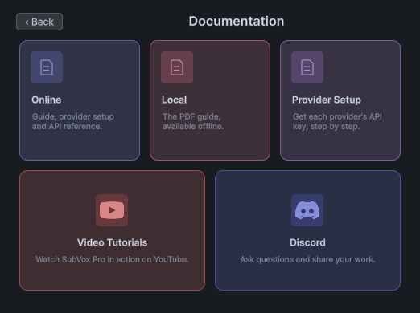
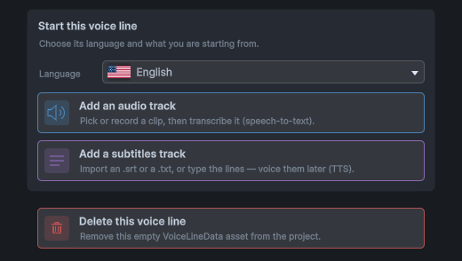
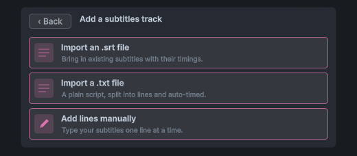
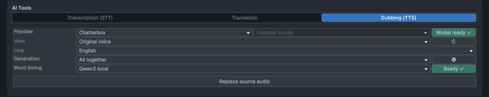
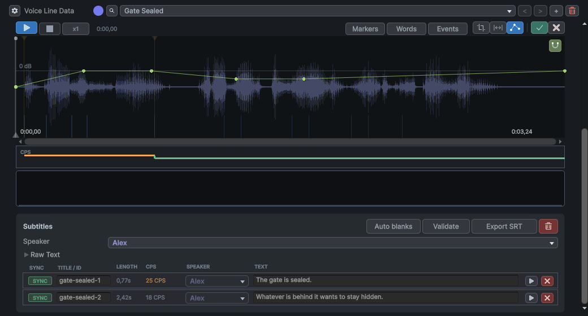
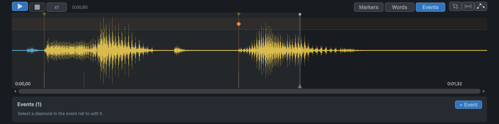
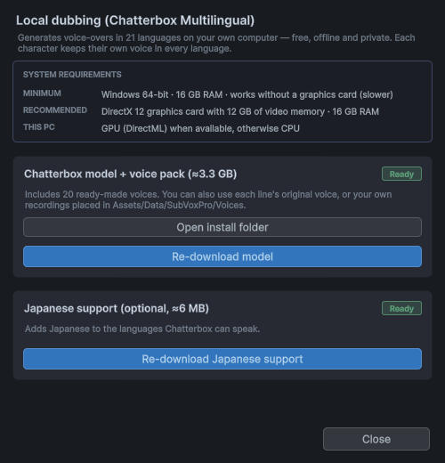

SubVox Pro
SubVox Pro wandelt Ihre Voice Lines direkt in Unity in synchronisierte Untertitel und Sprachfassungen um:
- Transkribieren Sie einen Audio-Clip in Untertitel mit Zeitangaben – über einen Cloud-Dienst oder vollständig offline.
- Bearbeiten Sie das Timing anhand einer Wellenform, formatieren Sie Wörter und überprüfen Sie die Lesegeschwindigkeit.
- Übersetzen Sie in 48 Sprachen und vertonen Sie die Texte per Sprachsynthese, optional mit der jeweiligen Stimme der Figur.
- Spielen Sie alles mit wenigen Komponenten im Spiel ab, lösen Sie über eine Voice Line Gameplay-Ereignisse aus und ziehen Sie Voice Lines in die Unity Timeline.
Clip, Aufnahme, .srt, .txt
Untertitel mit Zeitangaben
Marker, Wörter, Stile
48 Sprachen
Sprachsynthese, geklonte Stimmen
Komponenten, Events, Timeline
Beginnen Sie mit Audio oder mit Text und nutzen Sie nur die Schritte, die Sie brauchen.
Schaltflächen und Felder werden auf Englisch genannt, wie sie in Unity erscheinen. Diesen Leitfaden gibt es auf dieser Website auf Deutsch; das mit dem Plugin ausgelieferte PDF ist auf Englisch.
Inhalt
- Vor dem Start
- Schnellstart
- Das SubVox Pro-Fenster
- Transkribieren
- Übersetzen
- Mit Sprachsynthese vertonen
- Speaker und Stimmprofile
- Audio bearbeiten
- Voice Lines in Ihrem Spiel abspielen
- Gameplay über eine Voice Line auslösen
- Unity Timeline
- Viele Dateien gleichzeitig verarbeiten
- Mit Ihrem KI-Assistenten arbeiten
- Offline-Engines (kein Account, kein API-Schlüssel)
- Übersetzung durch Menschen mit Google Sheets
- Einstellungen
- Tastatur und Maus
- Unterstützte Sprachen
- Ihre Daten und Online-Dienste
- KI-generierte Stimmen in Ihrem Spiel
- Speicherorte Ihrer Dateien
- Aktualisieren und Deinstallieren
- Fehlerbehebung
- Support
Wie Sie für jeden Dienst einen Account und einen API-Schlüssel erhalten, erfahren Sie Schritt für Schritt unter Anbieter einrichten.
Vor dem Start
- Unity 2022.3 LTS oder neuer, einschließlich Unity 6, mit beliebiger Render-Pipeline: Built-in, URP oder HDRP.
- TextMesh Pro: Importieren Sie TMP Essentials einmalig, falls dies noch nicht geschehen ist. Unter Unity 2022.3 installieren Sie zunächst das Package TextMeshPro über den Package Manager. Unity 6 enthält es bereits.
- Unity Timeline ist optional: Die Timeline-Funktionen stehen zur Verfügung, sobald das Package installiert ist.
- Im Spiel läuft SubVox Pro auf jeder von Unity unterstützten Plattform.
- Im Editor wurde SubVox Pro unter Windows getestet. Die Cloud-Dienste mit Ihren eigenen API-Schlüsseln sollten auch unter macOS und Linux funktionieren, wurden dort jedoch noch nicht getestet. Die Offline-Engines (Transkription, Übersetzung und Vertonung ohne Account) setzen den Editor unter Windows voraus.
Schnellstart
Von einem Audio-Clip zu synchronisierten Untertiteln auf dem Bildschirm in wenigen Minuten.
Der Hub
Alle Funktionen von SubVox Pro erreichen Sie mit einem Klick über Tools ▸ SubVox Pro ▸ Hub. Seine neun Kacheln öffnen den Voice Line Editor (und die Stapelverarbeitung), die Dub Booth, Google Sheets, den MCP-Server für KI-Assistenten, die zusätzlichen Offline-Modelle, den Anbietervergleich, die Dokumentation, die Beispielszenen und die Einstellungen.

Voice Line Editor öffnet einen zweiten Bildschirm mit dem Voice Line Editor selbst und Batch Processing für viele Dateien auf einmal (Back führt zu den Kacheln zurück). Documentation öffnet einen weiteren:
| Schaltfläche | Öffnet |
|---|---|
| Online | Diese Website: Leitfaden, Anbieter und Skript-Referenz, auf Englisch, Französisch, Deutsch, Japanisch oder vereinfachtem Chinesisch |
| Local | Das englische PDF, offline lesbar |
| Provider Setup | Dasselbe PDF, direkt im Abschnitt zur Einrichtung der Anbieter geöffnet |
| Video Tutorials | Die SubVox Pro-Tutorials auf YouTube |
| Discord | Den Community-Server, um Fragen zu stellen und Ihre Arbeiten zu teilen |

Fünf Schritte
1. Transkriptionsmethode wählen. Fügen Sie den API-Schlüssel eines Spracherkennungsdienstes unter Tools ▸ SubVox Pro ▸ Settings ein (wo Sie einen erhalten) oder verwenden Sie unter Windows Whisper oder Parakeet, kostenlos und offline (beide bieten bei der ersten Verwendung den Download ihres Modells an).
2. Eine Voice Line erstellen. Assets ▸ Create ▸ SubVox Pro ▸ Voice Line, wählen Sie sie aus und klicken Sie im Inspector auf Edit Voice Line. Das SubVox Pro-Fenster öffnet sich mit einer neuen Voice Line: Überprüfen Sie Language (beim ersten Mal Englisch, danach die zuletzt gewählte Sprache), wählen Sie Add an audio track und Ihren Clip aus oder nehmen Sie einen auf.
Alternativ klicken Sie im Project-Fenster mit der rechten Maustaste auf eine Audiodatei und wählen SubVox Pro ▸ Create Voice Line. Legen Sie den Speicherort der neuen Voice Line fest: Der Editor öffnet sich mit dem bereits zugewiesenen Clip.

3. Transkribieren. Wählen Sie unter AI Tools ▸ Transcription den Anbieter und die gesprochene Sprache aus und klicken Sie auf Transcribe. Die Untertitel erscheinen auf der Wellenform.
4. Anpassen. Ziehen Sie die Marker auf der Wellenform, korrigieren Sie den Text in der Liste und drücken Sie Space, um zuzuhören.
5. Im Spiel anzeigen. Fügen Sie die Prefabs [SubVox Pro] und Subtitle Displayer (SubVoxPro/Prefabs) in
Ihre Szene ein und spielen Sie die Voice Line ab:
using SubVoxPro;
SubVox.Play(myVoiceLine);
Möchten Sie es zuerst in Aktion sehen? Öffnen Sie Examples im Hub (oder Tools ▸ SubVox Pro ▸ Example Scenes) und drücken Sie auf Play. Vier fertige Szenen mit Voice Lines in vier Sprachen, Sprechblasen, Dialogsequenzen, Voice-Events und Untertiteloptionen:
- ein 3D-Tempel;
- eine 2D-Neonstation;
- eine Noir-Visual-Novel;
- eine Sandbox in der Ego-Perspektive mit einem Stand pro Funktion.
Das SubVox Pro-Fenster

Öffnen Sie es über Tools ▸ SubVox Pro ▸ Voice Line Editor oder über Edit Voice Line im Inspector einer Voice Line. Von oben nach unten:
- Voice Line Data: die aktuelle Voice Line, mit Schaltflächen zum Erstellen, Durchsuchen, Aufteilen und Löschen. Der farbige Punkt ist ein Tag, das auf dem Symbol des Assets im Project-Fenster erscheint und beim Sortieren Ihrer Voice Lines hilft. Die Voice Lines der Beispielszenen liegen getrennt in einem eingeklappten Ordner Examples am Ende der Liste.
- Source: die Auswahlfelder AUDIO und SUBTITLES. Jede Voice Line hat eine Ausgangssprache (die Flagge; klicken Sie darauf, um sie zu ändern) und eine Spur pro übersetzter oder vertonter Sprache. Die beiden Auswahlfelder sind unabhängig: Sie können zum Beispiel französische Untertitel lesen und dabei den englischen Ton hören.
- AI Tools: Transkription, Übersetzung und Vertonung (siehe unten).
- Timeline: die Wellenform mit den Untertitel-Markern. Jeder Marker kennzeichnet den Beginn eines Untertitels; ein Marker ohne Text leert die Anzeige (ein Leermarker). Marker gehören zum Audio: Die Quelle und jede Vertonung haben eigene Marker auf ihrem eigenen Audio.
- Live preview: der Untertitel an der Position des Abspielkopfs, so wie er im Spiel erscheint. Wählen Sie darüber eine Farbe oder einen Stil und ziehen Sie dann über Wörter, um sie zu formatieren (Ziehen mit der rechten Maustaste entfernt die Formatierung).
- Subtitles: eine Zeile pro Untertitel mit Name, Dauer, Speaker, Text und einer Schaltfläche zum Abspielen.
Tags und Sprachen
Klicken Sie auf das Tag neben Voice Line Data, um Farbe und Form zu wählen. Clear tag entfernt es. Dank der Form lassen sich Voice Lines auch ohne Farbunterscheidung auseinanderhalten. Klicken Sie auf A-Z oder 0-9, um einen Buchstaben oder eine Ziffer als Form zu verwenden.

Klicken Sie auf die Flagge der Ausgangssprache, um die gesprochene Sprache zu wählen.
- Flaggen stehen für Sprachen, nicht für die Nationalität der Figuren: Die Auswahl zeigt Namen und Code jeder Sprache, Sie müssen die Flagge also nicht erkennen.
- Sprachen, die bereits von einer Übersetzung oder Vertonung belegt sind, sind ausgegraut.
- Um die Originaluntertitel zu löschen, verwenden Sie das Kreuz in der Quellzeile der Auswahl SUBTITLES.

Ohne Audio beginnen

Eine Voice Line kann statt mit Audio auch mit Text beginnen. Wählen Sie Add a subtitles track und dann:
| Auswahl | Ergebnis |
|---|---|
| .srt-Datei importieren | Untertitel mit ihren Zeitangaben |
| .txt-Datei importieren | Ein Untertitel pro Zeile, mit Dauern, die genug Zeit zum Lesen lassen |
| Zeilen von Hand hinzufügen | Die Zeilen, die Sie selbst eingeben |
Legen Sie Length fest: So lange wird die Voice Line im Spiel wiedergegeben, bis Sie Audio hinzufügen oder aus dem Text eine Sprachfassung generieren.
Audio aufnehmen

Record with a microphone (unter Add an audio track oder über das + neben dem AUDIO-Auswahlfeld) öffnet ein kleines Aufnahmefenster:
- Wählen Sie das Mikrofon und achten Sie auf den Pegel. Um ihn einzustellen, klicken Sie neben Gain auf Calibrate und sprechen Sie 3 Sekunden lang normal.
- Nehmen Sie auf und hören Sie sich die Aufnahme an.
- Klicken Sie auf Use recording. Die Aufnahme wird als WAV-Datei neben der Voice Line gespeichert.
Gestatten Sie Unity unter macOS in den Systemeinstellungen die Nutzung des Mikrofons.
Beim Aufnehmen mitlesen

Hat die Voice Line bereits Untertitel, zeigt das Aufnahmefenster sie unter Read along an: Sie können eine Synchronisation aufnehmen und dabei den Text lesen. Wählen Sie die Sprache in der Liste (oder Off).
Während Sie sprechen, werden Wörter grün, sobald sie erkannt werden, und rot, wenn sie übersprungen wurden. Der Text scrollt Zeile für Zeile mit, die vorige Zeile bleibt sichtbar.
- Alles läuft kostenlos auf Ihrem Computer: Dafür wird Parakeet oder ein lokales Whisper-Modell benötigt (Tools ▸ SubVox Pro ▸ Additional Models). Sind mehrere installiert, wählen Sie im Menü neben der Sprache aus, welches verwendet wird.
- Retake verwirft die Aufnahme und startet sofort eine neue.
- Listen spielt die Aufnahme ab der Wiedergabemarke ab. Klicken oder ziehen Sie in der Wellenform, um sie zu verschieben; Stop lässt sie dort, wo die Wiedergabe angehalten wurde. Die Leertaste startet und stoppt die Wiedergabe ebenfalls.
- Nach Stop wird die ganze Aufnahme noch einmal geprüft. Rote Wörter, die Sie doch gesagt haben, können Sie anklicken, um sie zu übernehmen.
- Use recording fügt die Aufnahme wie gewohnt hinzu (Spur ersetzen oder Synchronisation hinzufügen), wobei jedes Wort anhand Ihrer Aufnahme getimt wird. Ist das Qwen3-Wort-Timing installiert, verfeinert es diese Zeiten. Undo stellt die vorherigen Zeiten wieder her.
Synchron zum Original synchronisieren (Dub Booth)

Die Dub Booth nimmt eine Synchronisation so auf, wie Sprecher es tun: Zeile für Zeile, über die Originalaufnahme, damit Ihre Aufnahme genau dort liegt, wo die Originalzeile ist. Öffnen Sie sie über + Add audio ▸ Dub over the original, den Hub oder Tools ▸ SubVox Pro ▸ Dub Booth. Tragen Sie Kopfhörer, damit das Original nicht ins Mikrofon gelangt.
Eine Zeile aufnehmen
zuerst
Countdown
auf dem 4. Schlag
am Zeilenende
- Wählen Sie die Voice Line und die zu synchronisierende Sprache. Original (ADR) nimmt die Originalsprache neu auf.
- Drücken Sie die Leertaste. Das Original spielt einige Sekunden vor der Zeile, drei Pieptöne zählen herunter, und die Aufnahme beginnt auf dem vierten, stummen Schlag. Der Text läuft Wort für Wort am Abspielkopf vorbei, zwischen den Marken IN und OUT.
- Die Aufnahme endet am Ende der Zeile von selbst (oder drücken Sie die Leertaste).
- Plaketten zeigen, ob Sie on cue (im Timing) begonnen haben und um wie viel Sie länger (longer) oder kürzer (shorter) als das Original waren. Fahren Sie mit der Maus darüber, um beide Dauern zu sehen.
- Schon während der Aufnahme daneben? Discard (oder Esc) verwirft sie sofort, ohne das Ende abzuwarten.
- Hören Sie und vergleichen Sie (siehe Tabelle unten) oder nehmen Sie mit Redo neu auf.
- Validate & next (oder Eingabe) bestätigt die Aufnahme und geht zur nächsten aufzunehmenden Zeile. Unvalidate nimmt die Bestätigung zurück.
- Build dub legt die behaltenen Aufnahmen auf die Zeitleiste des Originals und fügt sie als Synchronisation dieser Sprache hinzu (bei Original (ADR): Replace original). Anschließend werden die Wörter Zeile für Zeile auf Ihre Aufnahmen getimt, ohne dass ein Modell installiert werden muss. Installieren Sie das Qwen3-Wort-Timing (Additional Models) für noch genauere Timings.
Aufnahmen anhören und vergleichen
| Steuerung | Funktion |
|---|---|
| Play | Spielt Ihre Aufnahme synchron zum Original |
| Menü neben Play | This line, With previous line (um zu prüfen, ob eine Korrektur an die vorige Zeile anschließt) oder All lines, jeweils mit der bestätigten Aufnahme |
| Lautsprecher-Symbole (ORIGINAL, YOUR TAKE) | Wählen, was Sie hören; A wechselt zwischen beiden |
| Redo (oder R) | Nimmt eine weitere Aufnahme auf. Alle Aufnahmen bleiben erhalten |
| TAKE | Wählt eine frühere Aufnahme; die bestätigte ist mit ✓ markiert |
| Papierkorb neben TAKE | Löscht die gewählte Aufnahme (eine neue Aufnahme erhält die erste freie Nummer) |
Zeile zu lang oder zu kurz
- Shorten: Eine Übersetzung ist oft 20 bis 30 % länger als das Original. Wenn eine Zeile in der Zeit des Originals schwer zu sprechen ist, erscheint vor der Aufnahme ein Hinweis unter ihrem Text. Shorten bittet Ihren Übersetzer (OpenAI, Claude, Gemini oder DeepSeek) um eine kürzere Zeile mit derselben Bedeutung, die in diese Zeit passt; Undo stellt den vorherigen Text wieder her.
- Fit to original: Neben den Plaketten dehnt oder staucht es eine Aufnahme um höchstens 10 %, ohne die Tonhöhe der Stimme zu ändern, und verschiebt sie so, dass sie mit dem Original beginnt. Das Ergebnis ist eine neue Aufnahme, bereit zur Bestätigung. Mehr als 10 % Abweichung? Nehmen Sie die Zeile neu auf: Stärkeres Dehnen würde unnatürlich klingen.
Mehrere Zeilen am Stück
Das Menü über der Zeilenliste legt fest, was eine Aufnahme umfasst:
| Auswahl | Nimmt auf |
|---|---|
| Record one line | Die gewählte Zeile |
| Record several lines | Von der angeklickten Zeile bis zur mit Umschalt-Klick gewählten |
| Record all lines | Von der gewählten Zeile bis zum Ende |
Mehrere Zeilen werden am Stück in natürlichem Tempo aufgenommen und danach in eine Aufnahme pro Zeile geteilt.
Einstellungen und Speichern
- Booth settings stellt Mikrofon, Verstärkung (Calibrate funktioniert wie im Aufnahmefenster), den Vorlauf des Originals vor der Zeile, die Pieptöne, das während der Aufnahme Gehörte und die Laufgeschwindigkeit ein (ein Mindestwert: Der Text läuft schneller, wenn eine Zeile sonst nicht passt).
- Aufnahmen werden laufend gespeichert: Schließen Sie das Fenster und machen Sie später dort weiter, wo Sie aufgehört haben.
Eigene Synchronisationen hinzufügen
Sie haben bereits aufgenommene Synchronisationen? Klicken Sie auf das + neben der AUDIO-Auswahl und wählen oder nehmen Sie den Clip auf. Ein Fenster fragt dann nach seiner Sprache:
- Replace a track: ersetzt das Originalaudio oder eine vorhandene Synchronisation;
- Add a new track: Wählen Sie seine Sprache, um ihn als neue Synchronisation hinzuzufügen.
Die Zeilen werden proportional auf dem neuen Audio platziert (oder nach der Aufnahme getimt, wenn Sie mitgelesen haben): Ziehen Sie die Marker zur Feinabstimmung. Übersetzte Zeilen in dieser Sprache werden über der Synchronisation angezeigt, sofern vorhanden.
Untertitel in einer anderen Sprache importieren
Das + neben der Auswahl SUBTITLES importiert eine .srt- oder .txt-Datei. Bei einer Voice Line, die bereits Inhalt hat, fragt ein Fenster, in welcher Sprache die Datei ist:
- Replace a track: ersetzt die Originaluntertitel (mit den Timings der Datei) oder eine vorhandene Übersetzung;
- Add a new track: Wählen Sie ihre Sprache, um sie als neue Übersetzung hinzuzufügen.
Eine Übersetzung behält das Timing der Originalzeilen. Jede importierte Zeile geht an die Originalzeile an derselben
Position oder, bei einer .srt mit anderer Zeilenanzahl, an die Originalzeile, die zu diesem Zeitpunkt läuft.
Untertitel überprüfen
- Show CPS (unter Settings) zeigt die Lesegeschwindigkeit jeder Zeile an und markiert zu schnelle Zeilen.
- Check Subtitles, zusammen mit Show CPS angezeigt, geht alle Probleme nacheinander durch (leere oder doppelte Namen, Zeilen außerhalb des Clips, Überlappungen, zu schnell zu lesende Zeilen) und bietet Korrekturen per Klick. Alles lässt sich rückgängig machen.
- Auto blanks blendet den Untertitel aus, solange niemand spricht, ohne Marker hinzuzufügen. Klicken Sie auf seine Schaltfläche (nach den Registerkarten für Zuschneiden, Zeitbearbeitung und Effekte, rechts in der Leiste der Timeline), aktivieren Sie die Funktion im Popup und legen Sie die Mindestdauer einer Pause fest; ausgeblendete Bereiche werden in der Wellenform schattiert.
- Export SRT speichert die Untertitel als
.srt-Datei.

| Einstellung von Auto blanks | Funktion |
|---|---|
| Silence | Wie viel leiser eine Pause als die Stimme sein muss |
| Min pause | Ignoriert zu kurze Pausen |
| Hold out | Zeigt den Text noch kurz an, nachdem die Stimme verstummt ist |
| Lead in | Blendet den Text wieder ein, bevor das Sprechen fortgesetzt wird |
| Only between two lines | Verhindert, dass ein Untertitel mitten im Satz verschwindet und wieder erscheint |
Die SYNC-Chips
Jede Zeile der Liste Subtitles beginnt in der Spalte SYNC mit einem farbigen Chip, der den Zustand dieser Zeile anzeigt. Fahren Sie mit der Maus über einen Chip, um Details zu sehen; ist ein Chip anklickbar, beschreibt sein Tooltip, was der Klick bewirkt.
Bei den Originaluntertiteln zeigt der Chip, wie gut die Wörter auf das Audio abgestimmt sind:

| Chip | Bedeutung | Was tun |
|---|---|---|
| SYNC | Jedes Wort ist auf das Audio abgestimmt: Die Wörter erscheinen genau dann, wenn sie gesprochen werden. | Nichts. |
| FIX n | n Wörter haben eine geschätzte Zeit: Sie wurden im Audio nicht erkannt. | Prüfen Sie ihre Wortmarker auf der Wellenform (Modus Words) und verschieben Sie sie bei Bedarf. |
| TEXT + | Die Zeile hat keine Wort-Timings und erscheint daher auf einmal. | Klicken Sie auf den Chip, um die Zeit jedes Wortes aus dem Text zu schätzen. Die Zeile zeigt danach FIX, da diese Zeiten geschätzt sind. |
| BLANK | Ein Marker ohne Text: Er leert den Bildschirm bis zum nächsten Untertitel. | Nichts. |
Bei einer Übersetzung (wählen Sie ihre Sprache im Auswahlfeld SUBTITLES) zeigt der Chip, ob die Zeile noch zum Original und zu ihrer Sprachfassung passt:

| Chip | Bedeutung | Was tun |
|---|---|---|
| FR | Der Sprachcode (FR, EN-US …): Die Übersetzung ist auf dem Stand des Originals. Der Tooltip zeigt auch, ob ihre Sprachfassung aktuell ist. | Nichts. |
| OUT | Die Originalzeile oder ihr Übersetzungshinweis wurde nach der Übersetzung geändert. | Klicken Sie auf Synchronize translations (Registerkarte Translation), um sie neu zu übersetzen, oder klicken Sie nach dem Prüfen der Zeile auf den Chip, um sie als aktuell zu markieren. |
| CUT | Ein Originalmarker wurde verschoben: Die übersetzte Zeile wurde automatisch neu geteilt und bricht womöglich mitten in einer Wendung um. | Klicken Sie auf Fix splits (Registerkarte Translation), um sie mit KI neu zu teilen, oder klicken Sie auf den Chip, um diese Teilung zu behalten. |
| REGEN | Die Sprachfassung passt nicht mehr zur Zeile: Text, Stimme, Persönlichkeit, Sounds oder Gruppen wurden geändert, der Anbieter, das Modell oder der Generierungsmodus wurde geändert, oder die Zeile wurde nie vertont. | Fahren Sie darüber, um den Grund zu sehen, und klicken Sie darauf, um nur das Nötige neu zu erzeugen. |
| DUBBING | Die Sprachfassung dieser Zeile wird gerade erzeugt (der Chip ist animiert). | Warten Sie. |
Eine Zeile zeigt immer nur einen Chip, in dieser Rangfolge:
Eine BLANK-Zeile zeigt immer BLANK.
Eine Voice Line löschen
Die Papierkorbschaltfläche löscht die Voice Line und listet die dazugehörigen Dateien auf: Die von SubVox Pro generierten Dateien (Sprachfassungen, Aufnahmen) sind ausgewählt, Ihre eigenen Dateien nicht, und eine Datei, die an anderer Stelle noch verwendet wird, ist gesperrt. Alles wird in den Papierkorb des Betriebssystems verschoben: Nichts geht endgültig verloren.
Eine Voice Line aufteilen
Wenn eine Voice Line mehrere Momente enthält, die Sie getrennt abspielen möchten, teilt die Schaltfläche zum Aufteilen (neben dem Papierkorb) sie in mehrere Voice Lines auf:
- Klicken Sie zwischen zwei Untertitel, um dort zu schneiden. Ein Schnitt liegt immer zwischen zwei Untertiteln, in der Pause, die sie trennt.
- Fügen Sie so viele Schnitte wie nötig hinzu.
- Benennen Sie die neuen Voice Lines.
Was aus den Teilen wird:
- Jeder Teil behält alles, was zu seinen Untertiteln gehört: Audio, Übersetzungen, Sprachfassungen, Speaker, Audioeffekte und Events.
- Der erste Teil bleibt in der aktuellen Voice Line: Ihre Szenen und Timelines verweisen weiterhin auf sie. Die anderen Teile werden daneben erstellt.
- Jeder Teil erhält eigene Audiodateien, und Ihre Originaldateien bleiben erhalten.
- Das Aufteilen kann nicht rückgängig gemacht werden.
Transkribieren

- Wählen Sie einen Provider und, falls dieser mehrere anbietet, ein Model. Die Statusanzeige rechts zeigt, ob er einsatzbereit ist (Schlüssel eingerichtet oder Modell heruntergeladen).
- Die transkribierte Sprache ist die Flagge der ausgewählten Audiospur; um die Ausgangssprache zu ändern, klicken Sie auf ihre Flagge. Kann der Anbieter diese Sprache nicht transkribieren, erscheint ein Hinweis mit den Anbietern, die es können. Hat die Quelle noch keine Sprache, tragen Anbieter mit automatischer Erkennung sie für Sie ein; bei den anderen fragt Transcribe zuerst danach.
- Klicken Sie auf Transcribe: Das Audio wird in Wörter umgewandelt, die anschließend zu Untertiteln gruppiert werden. Die Split settings legen fest, wie lange ein Untertitel höchstens dauert, wie früh er vor seinem ersten Wort erscheint und ob Zeilen an Satzzeichen enden sollen. Hat die Voice Line bereits Untertitel, werden Sie vor dem Ersetzen gefragt.
- Passt die Aufteilung nicht? Ändern Sie die Split settings: Am Ende der Zeile Smart split erscheint eine kleine Schaltfläche Re-split. Klicken Sie darauf: Dieselben Wörter werden neu gruppiert, ohne erneute Transkription (und ohne erneute Kosten).
Wort-Timing
Word timing legt fest, woher die Zeitangabe jedes Wortes stammt:
| Option | Funktion |
|---|---|
| From the provider (Standard) | Behält die von der Transkription gelieferten Zeitangaben bei. |
| Built-in aligner | Ordnet jedes Wort vor dem Aufteilen erneut dem Audio zu, damit die Schnitte auf den echten Pausen liegen. Keine Installation nötig, funktioniert in jeder Sprache. |
| Qwen3 aligner (local) | Ebenso, mit den genauesten Zeitangaben für wortweise angezeigte Untertitel (einmal installieren). Bei einer Sprache, die Qwen3 nicht unterstützt, bleiben die Zeitangaben des Anbieters erhalten. |
Die Aligner ändern den Text nie. Die Schaltfläche Re-align am Ende dieser Zeile funktioniert mit beiden Alignern (bei From the provider ist sie ausgegraut): Wenn Sie ein Wort korrigiert oder einen Schnitt von Hand verschoben haben, ordnet sie die Wörter erneut dem Audio zu und behält dabei Ihren Text und Ihre Schnitte bei.
Anbieter
AssemblyAI, Gladia, Deepgram, Speechmatics, ElevenLabs, Rev AI, Cartesia, OpenAI oder Whisper und Parakeet offline.
Unsicher, welchen Sie wählen sollen? Tools ▸ SubVox Pro ▸ Provider Comparison vergleicht sie direkt miteinander: Preis, kostenloser Tarif, kommerzielle Nutzung, Sprachen.

Tipp: OpenAI gpt-transcribe liefert Text ohne Zeitstempel für die einzelnen Wörter; die Zeitangaben werden über die Dauer des Clips geschätzt. Nutzen Sie die lokale Zuordnung oder einen Anbieter mit Wortzeitstempeln, wenn das Timing wichtig ist.
Die Transkription nutzt das im AUDIO-Auswahlfeld gewählte Audio, sodass Sie auch eine Sprachfassung transkribieren können.
Übersetzen

- Wählen Sie einen Provider: DeepL, Google Translate, OpenAI, Claude, Gemini, DeepSeek oder Hy-MT2 offline.
- Haken Sie unter Target eine oder mehrere Sprachen an oder wählen Sie eine Voreinstellung, um mehrere Sprachen auf einmal zu erstellen.
- Legen Sie unter Formality die Anrede fest (formell oder informell), sofern die Sprache diese Unterscheidung kennt.
- Klicken Sie auf Translate. Jede Sprache erhält eine eigene Spur; wechseln Sie mit dem SUBTITLES-Auswahlfeld zwischen ihnen.

Im Popup-Fenster Target:
- Haken Sie links beliebig viele Sprachen an und speichern Sie sie rechts mit Save as preset, um sie wiederzuverwenden;
- eine Voreinstellung zu wählen übersetzt in einem Arbeitsgang in alle ihre Sprachen;
- die rechte Spalte bearbeitet Namen und Sprachen der Voreinstellung.
Den Übersetzer unterstützen
Mehrdeutige Zeilen lassen sich mit Kontext besser übersetzen:
- ein globaler Kontext für die ganze Voice Line (Schaltfläche mit Sprechblasensymbol);
- bei Bedarf eine Anmerkung zu einer einzelnen Zeile (ihre Sprechblasen-Schaltfläche in der Liste).
Übersetzungen aktuell halten
| Wenn Sie … | Die übersetzten Zeilen zeigen | Danach |
|---|---|---|
| eine Quellzeile nach dem Übersetzen ändern | OUT | Klicken Sie auf Synchronize, um nur die geänderten Zeilen neu zu übersetzen, oder klicken Sie nach dem Prüfen der Zeile auf den Chip. |
| Marker so verschieben, dass ein Satz an einer neuen Stelle geteilt wird | CUT | Fix splits lässt einen KI-Anbieter die Übersetzung an der inhaltlich entsprechenden Stelle teilen, ohne ihre Wörter zu ändern. |
Die Sprachfassungen werden automatisch angepasst. Alle Chips werden unter Die SYNC-Chips erklärt.
Mit Sprachsynthese vertonen

- Wählen Sie im Auswahlfeld SUBTITLES die zu vertonende Sprache.
- Wählen Sie unter AI Tools ▸ Dubbing einen Provider und eine Voice. Die Schaltfläche ▶ neben einer Stimme spielt eine Hörprobe ab. Mit Use speakers' voices erhält jede Zeile die Stimme ihres Speakers.
- Wählen Sie den Modus unter Generation (siehe Tabelle unten).
- Klicken Sie auf Generate Sprache audio track (zum Beispiel Generate French audio track). Die Vertonung wird eine neue Audiospur und anstelle des Originals wiedergegeben, wenn diese Sprache aktiv ist.
Eine Vertonung ist nicht genau so lang wie das Original und erhält daher eigene Marker. Sie liegen nicht an denselben Stellen wie die der Quelle, und das Verschieben des einen verschiebt nicht den anderen.
Um das Audio anderswo zu verwenden, klicken Sie unter der Schaltfläche Generate auf Export audio…: Eine Kopie der aktuellen Audiodatei wird unverändert im Ordner Ihrer Wahl gespeichert.
Generierungsmodi
| Modus | Ein Take pro | Gut zu wissen |
|---|---|---|
| Each subtitle | Zeile | Am einfachsten Zeile für Zeile zu korrigieren |
| Per speaker | Gruppe von Zeilen derselben Figur | Natürlicherer Sprachfluss |
| All together | ganze Voice Line | Am natürlichsten, aber alles wird auf einmal neu generiert |
| Groups | von Ihnen gewählte Wörter | Siehe unten |
Groups-Modus
Wenn Sie Groups wählen, wird das Werkzeug Groups oberhalb der Wellenform aktiviert. Jede Gruppe wird in einem Take gesprochen, mit der Stimme und dem Stimmprofil ihres ersten Wortes, und der Untertiteltext erhält die Farbe der Gruppe. Anfangs umfasst eine einzige Gruppe alles.
| Auf der Wellenform | Ergebnis |
|---|---|
| Innerhalb einer Gruppe ziehen | Teilt sie in drei, die neue Gruppe in der Mitte. Sie kann mitten in einer Zeile beginnen oder enden und erhält eine eigene Farbe. |
| Die Grenze zwischen zwei Gruppen ziehen | Verschiebt sie. Über eine ganze Gruppe hinaus geschoben, entfernt sie diese Gruppe; vor dem Loslassen zurückgezogen, stellt sie sie wieder her. |
| Rechtsklick auf eine Gruppe | Entfernt sie: Die benachbarte Gruppe nimmt ihren Platz ein. |
| Papierkorb-Schaltfläche | Führt alles wieder zu einer Gruppe zusammen. |
Gruppen werden pro Untertitelsprache gespeichert.
Geräusche (Lachen, Seufzen, Pausen …)
Das Werkzeug Sounds oberhalb der Wellenform fügt ein Geräusch ein, das die Stimme ausführt. Setzen Sie es an eine beliebige Stelle: Es wird zwischen den beiden nächstgelegenen Wörtern gesendet. Geräusche werden nur an die Stimme gesendet und nie in den Untertiteln angezeigt.
| Auf der Wellenform | Ergebnis |
|---|---|
| Mittelklick | Wählen Sie ein Geräusch: Eine Markierung zeigt die Stelle an. |
| Linksklick | Verschiebt den Abspielkopf, wie in den anderen Modi. |
| Eine Markierung ziehen | Verschiebt sie frei. |
| Rechtsklick auf eine Markierung | Entfernt sie. |
| Kopieren-Schaltfläche | Überträgt die Geräusche in die anderen Sprachen, an dieselbe Stelle jeder Zeile. |
| Papierkorb-Schaltfläche | Entfernt die Geräusche der aktuellen Sprache. |
- Jede Untertitelsprache hat ihre eigenen Geräusche. Wenn Sie ein Geräusch hinzufügen, verschieben oder entfernen, erhält die Zeile einen REGEN-Chip.
- Die Liste zeigt nur die Geräusche, die der gewählte Anbieter ausführen kann: InWorld, ElevenLabs v3 und v4, Gemini und Cartesia Sonic 3. Bei jedem anderen Anbieter ist das Werkzeug Sounds ausgegraut.
- Unter der Liste können Sie eigene Wörter hinzufügen (zum Beispiel giggles). Sie werden in Ihrer Bibliothek für alle Voice Lines gespeichert. Nur ElevenLabs v3 und v4 sowie Gemini können eigene Wörter ausführen, daher sind sie bei den anderen Anbietern ausgeblendet.
- Eine ausgegraute Markierung ist ein Geräusch, das der aktuelle Anbieter nicht ausführen kann: Es wird bei der Generierung übersprungen.
Anbieter
| Anbieter | Hinweise |
|---|---|
| InWorld, ElevenLabs, Gemini, OpenAI, Google Cloud, Azure, Cartesia, AssemblyAI | Online-Dienste |
| Kokoro | Offline, Englisch |
| Chatterbox | Offline, 21 Sprachen, behält die Stimme jeder Figur bei |
| Qwen3 TTS | Offline, zehn Sprachen: Stimmklonung anhand von Referenzaudio, vorgegebene Stimmen und Stimmgestaltung |
| VoxCPM2 | Offline, 30 Sprachen: Stimmklonung anhand von Referenzaudio mit schriftlichen Stilanweisungen, und Stimmgestaltung |
Optionen
Word timing: wie die Wörter der Vertonung getimt werden:
- Qwen3 aligner (local) lässt Wörter genau dann erscheinen, wenn sie gesprochen werden (einmal installieren);
- Built-in aligner ordnet jedes Wort ohne Installation dem erzeugten Audio zu, etwas weniger präzise;
- None behält nur die Zeitangaben der Zeilen, wenn Sie Untertitel nicht Wort für Wort einblenden.
Die Einstellung beginnt auf Qwen3 aligner, sobald der Aligner installiert ist, vorher auf None. Die Schaltfläche Re-align am Ende der Zeile ordnet die Wörter des gewählten Audios (einer Vertonung oder der Quelle) diesem erneut zu, zum Beispiel nachdem Sie ein Wort von Hand korrigiert haben.
Voice direction: Mit der Sprechblasen-Schaltfläche neben der Stimme geben Sie den Tonfall vor (zum Beispiel ruhig, flüsternd), sofern der Anbieter solche Anweisungen versteht.
REGEN: Wenn die Vertonung einer Zeile nicht mehr passt (Text, Stimme oder Stimmprofil geändert), erscheint darauf ein REGEN-Chip. Fahren Sie darüber, um den Grund zu sehen, und klicken Sie darauf, um nur das Nötige neu zu generieren.
Stimmklonung: Wählen Sie bei ElevenLabs (kostenpflichtiger Tarif), Chatterbox, Qwen Base oder VoxCPM2 Original voice, um jede Figur mit ihrer eigenen, aus dem Quellaudio geklonten Stimme zu vertonen. Sie können eine Stimme auch aus einem Clip klonen, der im Ordner
VoicesIhres Datenordners liegt. Klonen Sie nur Stimmen, zu deren Nutzung Sie berechtigt sind.
OpenAI und einige andere Dienste verlangen, dass Sie Ihre Spielerinnen und Spieler darauf hinweisen, dass die Stimmen KI-generiert sind: siehe Provider Setup.
Speaker und Stimmprofile
Speaker

Ein Speaker ist eine Figur: ein Name, der in ihrer eigenen Farbe vor ihren Untertiteln angezeigt wird, und ihre Stimmen für die Vertonung. Erstellen Sie einen Speaker über Assets ▸ Create ▸ SubVox Pro ▸ Speaker oder über die Speaker-Auswahl im Fenster.
- Legen Sie den Speaker einer ganzen Voice Line im Feld Speaker oberhalb der Liste fest: Er gilt für alle Zeilen. Jede Zeile kann trotzdem in ihrer eigenen Reihe einen Speaker wählen; das Feld zeigt dann Mixed.
- Im Inspector des Speakers wählen Sie unter Text-to-speech voices die Stimme pro Anbieter, mit einer Standardstimme für alle Sprachen und optionalen Abweichungen pro Sprache.
- Im Subtitle Displayer (oder Subtitle Document Displayer) legt Speaker Name Mode fest, ob der Name vor der Zeile (Inline), darüber (Above) oder gar nicht (Hidden) angezeigt wird. Ein Speaker kann auch eine eigene Schriftart haben: Font (TextMeshPro) für den Subtitle Displayer, Font (UI Toolkit) für den Subtitle Document Displayer.
- Mit Keep Background Between Subtitles bleibt während eines Leermarkers zwischen zwei Zeilen nur das Untertitelpanel sichtbar. Die Option ist standardmäßig aktiviert; ein Leermarker vor der ersten oder nach der letzten Zeile blendet das Panel trotzdem aus.

Die Speaker-Auswahl gruppiert Figuren nach Geschlecht. Der Bleistift bearbeitet einen vorhandenen Speaker; New speaker erstellt einen neuen.
Stimmprofile
Ein Stimmprofil ist eine wiederverwendbare Sprechanweisung: Angry, Mysterious, Whispering …
- Erstellen Sie eines über einen Speaker (New personality) oder über Assets ▸ Create ▸ SubVox Pro ▸ Voice Personality.
- Formulieren Sie die Anweisung selbst oder kombinieren Sie eine Emotion und eine Sprechweise mit ihrer Intensität, dann Sprechtempo, Lautstärke, Tonhöhe und Artikulation.
- Klicken Sie auf sein Symbol, um eines von etwa vierzig Symbolen zu wählen (Emotionen, Stimmungen, Stimme und Charakter), damit Sie es in den Listen auf einen Blick erkennen.
Weisen Sie jeder Zeile über ihren Chip in der Liste ein Stimmprofil zu (im Modus Each subtitle) oder verwenden Sie standardmäßig das des Speakers.
- Jeder Anbieter setzt um, was er kann, in der Form, die er versteht: geschriebene Anweisung, Audio-Tags oder Sprechstile. Andere befolgen nur das Sprechtempo.
- Der Tooltip des Chips zeigt, was die gewählte Stimme davon verwendet.
- Ein Stimmprofil legt fest, wie eine Zeile gesprochen wird, nicht wer spricht: Das Alter einer Stimme gehört zu ihrer Beschreibung (siehe unten).
Audio bearbeiten
Die Registerkarten rechts in der Leiste der Timeline (Crop, Time edit, Audio effects) bearbeiten das Audio selbst. Jede Bearbeitung lässt sich mit Ctrl+Z rückgängig machen.
Zuschneiden
Ziehen Sie die Griffe am Anfang und Ende und klicken Sie dann auf Apply crop. Das Zuschneiden betrifft die Quelle oder die gewählte Vertonung und überschreibt diese Audiodatei: Bewahren Sie eine Kopie der vollständigen Aufnahme auf, falls Sie sie noch brauchen könnten.
Pause einfügen oder Passage entfernen
Die Schaltfläche |↔|. Praktisch, wenn eine TTS-Stimme zwei Sätze ohne Pause hintereinander spricht.
- Ziehen mit der linken Maustaste fügt Stille ein.
- Ziehen mit der rechten Maustaste schneidet eine Passage heraus.
Nachfolgende Untertitel, Wörter und Events verschieben sich mit dem Audio.
Audioeffekte
Die Schaltfläche Audio effects öffnet die Effektliste. Angewendete Effekte erscheinen zuerst; wählen Sie einen aus, um ihn zu bearbeiten, oder klicken Sie auf sein Kreuz, um ihn zurückzusetzen und zu entfernen.

Verfügbare Effekte: Lautstärkekurve, Ein- und Ausblenden, Normalisierung, Kompressor, Limiter, Noise-Gate, Filter, Equalizer, Telefon/Radio, Tonhöhe, Intonation, Panorama, entfernungsabhängige Dämpfung, Raumhall.
- Zeichnen Sie auf der Timeline ein, wo ein Effekt wirkt.
- Stellen Sie mit den Schiebereglern ein, wie er wirkt.
- Klicken Sie auf Apply effects.
Das Magnetsymbol in der Ecke einer Kurve richtet Punkte am Basiswert, an 0 und an benachbarten Punkten aus (halten Sie Alt gedrückt, um einen Punkt frei zu platzieren).

Die obige Lautstärkekurve senkt nur die ausgewählten Passagen. Die Wellenform macht den zeitlichen Verlauf sichtbar, während die Punkte die Verstärkung steuern; 0 dB lässt die ursprüngliche Lautstärke unverändert.
SubVox Pro bewahrt Ihr Originalaudio auf: Die Effekte bleiben bearbeitbar.
| Schaltfläche | Ergebnis |
|---|---|
| Flatten | Macht die Effekte dauerhaft |
| Discard | Entfernt sie alle |
Stimmfilter
Ein Klick verwandelt die ganze Stimme. Wählen Sie den Klang im Menü Filter und stellen Sie seine Stärke mit Intensity ein:
- Telephone (Telefon)
- Radio / walkie-talkie, mit Rauschen und Squelch
- Robot (Roboter)
- Cathedral (Kathedrale): hallt nach jedem Wort nach, klingt aber am Ende des Clips aus; lassen Sie nach dem letzten Wort eine kurze Stille, um den Nachhall zu hören.
- Behind a door (hinter einer Tür)
- Monster
- Inner voice (innere Stimme)
Der Filter deckt standardmäßig die ganze Zeile ab; senken Sie seine Kurve, um einen Teil der Zeile unverändert zu lassen.
Intonation und Tonhöhe

In Intonation zeigt die obere Kurve die erkannte Sprechmelodie. Zeichnen Sie in der Spur darunter ein, um wie viel sie angehoben (+) oder abgesenkt (−) werden soll, in Halbtönen (st): Bei 0 bleibt sie unverändert. Beide werden getrennt dargestellt, damit Sie sehen, was die Stimme getan hat und was Sie ändern. Der Rest der Zeile bleibt unberührt.
| Steuerung | Funktion |
|---|---|
| Magnet | Rastet Ihren Strich im benachbarten Raster ein (standardmäßig 0,5 st); halten Sie Alt gedrückt, um frei zu zeichnen |
| Wave | Glättet neue Striche über den gewählten Zeitraum (bei 0 wird Ihr Strich exakt übernommen) |
| Ziehen mit der rechten Maustaste | Stellt die ursprüngliche Stimme wieder her |
| Esc | Bricht einen Strich ab |
Pitch verschiebt die Tonhöhe einer ganzen Passage und zeigt dieselbe Melodie an. Beide bewahren den natürlichen Klang der Stimme; wenige Halbtöne liefern die besten Ergebnisse. Das Menü Engine bietet:
| Engine | Charakter |
|---|---|
| WORLD (Standard) | Natürlich |
| PSOLA | Weniger rechenintensiv |
| Classic | Am schnellsten; verändert auch den Charakter der Stimme |
Voice Lines in Ihrem Spiel abspielen
Die Szene einrichten
- Fügen Sie das Prefab [SubVox Pro] (
SubVoxPro/Prefabs) einmal in Ihre Startszene ein. Es spielt Voice Lines ab und löst deren Ereignisse aus. (Fehlt es, wird beim ersten Abspielen ein Standard-Player erstellt und eine Warnung ausgegeben.) - Fügen Sie eine Untertitelanzeige in die Szene ein (
SubVoxPro/Prefabs):
| Subtitle Displayer (Canvas) | Subtitle Document Displayer (UI Toolkit) | |
|---|---|---|
| Was Sie erhalten | Ein fertiges Untertitelfeld am unteren Bildschirmrand, das bei langen Zeilen mitwächst und zwischen den Voice Lines ausgeblendet wird | Dieselben Untertitel, Sprechernamen und Stile in einem UI Document |
| Anpassen | Frei: Schriftart, Farben, Position, Größe | In Subtitle Document.uss (SubVoxPro/Prefabs/UI/UI Toolkit) |
| Oder Ihre eigene UI verwenden | Fügen Sie die Komponente zu Ihrem Canvas hinzu und weisen Sie Subtitle Text zu (und Background, damit es zwischen den Voice Lines ausgeblendet wird) | Fügen Sie die Komponente zu Ihrem UI Document hinzu und geben Sie den Namen des Labels an, das den Text anzeigt (und des Elements, das zwischen den Voice Lines ausgeblendet wird) |
Eine Voice Line aus dem Code abspielen
Alles läuft über SubVox. Kopierfertige Skripte für die gängigen Fälle (auf eine Voice Line warten, auf ein Ereignis
reagieren, ein Sprachauswahlmenü, ein Optionsmenü, ein Dialogprotokoll, Video-Untertitel …) finden Sie unter
SubVoxPro/Example/Snippets, und Ihr Code-Editor beschreibt während der Eingabe jede Klasse, Methode und Einstellung.
Die vollständige Skriptreferenz ist online neben diesem Leitfaden verfügbar, mit einer Seite pro Version von
SubVox Pro: https://exnihilus.github.io/subvoxpro-docs/ (auch über Documentation ▸ Online im Hub).
using SubVoxPro;
SubVox.Play(myVoiceLine); // plays, with synced subtitles
SubVox.PauseAll(); // game paused
SubVox.ResumeAll();
SubVox.StopAll(); // cutscene skipped
SubVox.CurrentLanguage = "fr"; // French subtitles and dubs ("" = original)
SubVox.AudioLanguage = "ja"; // Japanese voices, whatever the subtitles (null = follow them)
Play gibt die Wiedergabe der Voice Line zurück: Prüfen Sie deren State, Time und Progress, pausieren oder
stoppen Sie sie, reagieren Sie auf ihre Ereignisse Completed / Interrupted oder warten Sie in einer Coroutine auf
sie:
yield return SubVox.Play(greeting); // waits until the line is over
yield return SubVox.Play(answer);
| Aufruf | Funktion |
|---|---|
SubVox.IsPlaying(line) |
Gibt an, ob eine Voice Line gerade abgespielt wird |
SubVox.Stop(line) |
Stoppt nur diese Voice Line |
SubVox.PlayAt(line, position) |
Spielt eine Voice Line einmal an einem Punkt der Welt ab, wie eine Stimme aus einem Lautsprecher |
myVoiceLine.GetSubtitleAt(time, language) |
Liefert den Untertitel zu jedem Zeitpunkt, um eine Voice Line an anderer Stelle anzuzeigen (Video, Menü) |
myVoiceLine.TryGetWordAt(time, language, out word) |
Liefert das zu diesem Zeitpunkt gesprochene Wort |
Einstellungen des Voice Line Managers
- Subtitle Reveal Mode: zeigt Untertitel jeweils als ganze Zeile an (Standard), Wort für Wort oder als Karaoke (die ganze Zeile, das gesprochene Wort hervorgehoben). Timeline-Zwischensequenzen folgen ihm ebenfalls.
- Ducked Snapshot / Normal Snapshot: Um die Musik während der Dialoge abzusenken, weisen Sie zwei Audio-Mixer-Snapshots zu, einen mit abgesenkter Musik und einen normalen.
Stimmen in 3D und mehrere Stimmen gleichzeitig
Fügen Sie jeder sprechenden Figur einen Voice Line Emitter hinzu und stellen Sie dessen AudioSource auf 3D ein: Die Stimme kommt von der Figur, und mehrere Figuren können gleichzeitig sprechen.
npc.GetComponent<VoiceLineEmitter>().Play(barkLine, EVoiceLinePriority.Low);
Prioritäten und Warteschlange
Prioritäten schützen wichtige Voice Lines:
- bei einem Emitter ersetzt eine neue Voice Line die aktuelle nur, wenn sie mindestens ebenso wichtig ist;
- auf dem Bildschirm wird der Untertitel der wichtigsten Voice Line angezeigt.
Wie eine neue Voice Line abgespielt wird, hängt von ihrem Wiedergabemodus ab:
| Wiedergabemodus | Wenn der Emitter bereits spricht |
|---|---|
EVoiceLinePlayMode.Replace (Standard) |
Die neue Voice Line ersetzt die aktuelle, wenn sie mindestens ebenso wichtig ist |
EVoiceLinePlayMode.Queue |
Die neue Voice Line wartet, bis sie an der Reihe ist |
EVoiceLinePlayMode.IfIdle |
Die neue Voice Line wird nur abgespielt, wenn der Emitter frei ist |
| Am Emitter | Funktion |
|---|---|
Skip() |
Beendet die aktuelle Voice Line sofort, wie eine Schaltfläche „Dialog überspringen“ |
ClearQueue() |
Verwirft die wartenden Voice Lines |
PlaybackSpeed |
Spielt seine Voice Lines schneller oder langsamer ab |
| Show Subtitles | Für Hintergrundgespräche deaktivieren |
VoiceLineCompleted / VoiceLineInterrupted |
Melden das Ende einer Voice Line |
Paused / Resumed |
Melden Pausieren und Fortsetzen |
Lippensynchronisation
Das Ereignis WordChanged eines Emitters wird bei jedem neu gesprochenen Wort ausgelöst (und zwischen den Wörtern),
und CurrentWord enthält das aktuelle Wort: Das reicht, um den Mund einer Figur zu animieren oder eine Geste
auszulösen.
emitter.WordChanged += word => mouth.SetBool("Talking", word.Text != null);
Stimmgesteuerte Effekte
Loudness eines Emitters gibt an, wie laut die Stimme gerade ist, von 0 (Stille) bis 1. Damit pulsiert ein Schein,
flackert ein Licht oder leuchtet ein Sprechersymbol, während eine Figur spricht.
halo.intensity = Mathf.Lerp(halo.intensity, emitter.Loudness * 3f, Time.deltaTime * 20f);
Es folgt der gehörten Sprache und wird beim Speichern einer Voice Line oder ihres Audios automatisch gemessen: Es gibt nichts einzurichten.
Melodiestimme
Für Stimmen im „Animal Crossing“-Stil fügen Sie neben dem Emitter einer Figur einen Melody Voice Modifier hinzu. Jede gesprochene Silbe spielt einen kurzen Blip, der der Melodie der Stimme folgt, in jeder Sprache und ohne etwas zu generieren. Zeilen ohne Audio erhalten ebenfalls Blips, mit einer leichten zufälligen Variation.
| Einstellung | Funktion |
|---|---|
| Blip On | Syllable (ein Blip pro Silbe) oder Word (ein Blip pro Wort) |
| Mode | Replace, um nur die Blips zu hören, oder Background, um sie über der Stimme abzuspielen, eine Oktave höher, damit die Worte verständlich bleiben |
| Base Pitch | Die Stimmlage der Figur: höher für eine kleine Figur, tiefer für eine große |
| Preset / Custom Sound | Ein Blip, eine Klavier-, Spieluhr-, Marimba- oder Gitarrennote oder Ihr eigener Klang |
| Pitch Range | Wie genau die Blips der Stimme folgen |
| Scale | Für Instrumente: Pentatonic, Major für eine fröhliche oder Minor für eine traurige Melodie. Jede Note wird dann auf die Tonleiter gestimmt, in der Tonart der Stimme der Figur, und die Melodie klingt sauber. |
Sprechblasen
Wählen Sie eine Figur aus und verwenden Sie GameObject ▸ SubVox Pro ▸ Subtitle Bubble: Über ihrem Kopf erscheint eine Sprechblase, die nur anzeigt, was diese Figur sagt. Deaktivieren Sie Show Subtitles ihres Emitters, damit diese Voice Lines nicht zusätzlich am unteren Bildschirmrand erscheinen.
| Einstellung | Funktion |
|---|---|
| Constant Screen Size | Hält den Text auf dem Bildschirm gleich groß, ob die Figur nah oder fern ist |
| Text Height | Diese Größe als Anteil der Bildschirmhöhe. Der Inspector zeigt die entsprechende Größe in Pixeln bei 1080p und 4K. |
| Max Distance | Jenseits davon passt sich die Sprechblase nicht mehr an und wird wie der Rest der Szene kleiner |
| Camera | Die Kamera, der sie folgt (leer = die Hauptkamera). 2D-(orthografische) Kameras funktionieren ebenfalls. |
Ohne Code
| Komponente | Spielt ab |
|---|---|
| Voice Line Zone | Eine Voice Line, wenn der Spieler einen Trigger betritt (2D oder 3D) |
| Voice Line Play On Start | Eine Voice Line beim Start des Objekts, nach einer optionalen Verzögerung |
| Voice Line Bank | Eine von mehreren Voice Lines, wie die Ausrufe eines Wächters |
| Voice Line Sequence | Einen Dialog: eine Liste aufeinanderfolgender Voice Lines |
Jede davon hat einen Emitter (leer = der Standard-Emitter), eine Priority und eine öffentliche Methode
Play(), die Sie über eine Schaltfläche oder ein beliebiges UnityEvent aufrufen können.
Voice Line Zone
- Spielt einmal ab oder erneut nach einer Abklingzeit.
- Kann warten, bis die Figur zu Ende gesprochen hat (Play mode: Queue).
- Kann die Voice Line stoppen, wenn der Spieler den Bereich verlässt, und sie bei seiner Rückkehr erneut abspielen.
Voice Line Bank
Erstellen Sie sie über Assets ▸ Create ▸ SubVox Pro ▸ Voice Line Bank und weisen Sie sie dem Feld Bank einer Zone oder von Play On Start zu. Sie wählt ihre Voice Lines:
- zufällig, ohne zweimal hintereinander dasselbe zu sagen;
- in gemischter Reihenfolge;
- oder der Reihe nach.
Voice Line Sequence
Erstellen Sie sie über Assets ▸ Create ▸ SubVox Pro ▸ Voice Line Sequence und spielen Sie sie mit einem Voice Line Sequence Player ab, dessen Inspector den Fortschritt im Play mode anzeigt.
- Die Voice Lines folgen automatisch aufeinander oder wenn Sie
Advance()aufrufen. Previous()springt eine Voice Line zurück, etwa für eine Schaltfläche „Vorherige Voice Line“.- Stellen Sie Direction auf Backward, um die Voice Lines von der letzten zur ersten abzuspielen.
- Ist die Figur mit einer wichtigeren Voice Line beschäftigt, wartet der Dialog und wird nach einer kurzen Resume Delay fortgesetzt.
Sprache wechseln
Beim Ändern der Sprache wechseln die angezeigten Untertitel sofort. Die Sprachfassung folgt ab der nächsten Voice Line, da eine Voice Line die Sprache nicht mitten im Satz wechseln kann.
- Audio in einer anderen Sprache: Standardmäßig folgen die Stimmen der Untertitelsprache. Damit Spieler eine
Sprache hören und eine andere lesen (zum Beispiel japanische Stimmen mit französischen Untertiteln), setzen Sie
SubVox.AudioLanguage; mitnullfolgt es wieder den Untertiteln. Die Beispielszenen bieten beide Auswahlen. - Unity Localization: Wenn Ihr Projekt das Localization-Paket von Unity verwendet, folgt SubVox Pro automatisch der dort gewählten Sprache. Um die Sprache selbst festzulegen, setzen Sie Language Source im Voice Line Manager auf Manual.
- Sprechernamen: Ein Speaker kann in jeder Sprache einen anderen Namen anzeigen. Tragen Sie seine Localized Names ein oder verweisen Sie mit Unity Localization über Localization Table und Localization Entry auf eine Zeichenfolge.
- Verwandte Sprachen: Ein Spieler mit
pt-BRhört und liest eine Übersetzung inpt, wenn keine inpt-BRvorhanden ist (und umgekehrt). - Sprachauswahlmenü:
myVoiceLine.GetSubtitleLanguages()undGetAudioLanguages()listen auf, was eine Voice Line anbietet.
Untertiteloptionen für Spieler
Binden Sie diese Einstellungen in Ihr Optionsmenü ein; jede Untertitelanzeige übernimmt sie sofort:
SubVox.SubtitlesEnabled = false; // no subtitles (voices carry on)
SubVox.SubtitleScale = 1.5f; // bigger text
SubVox.BackgroundOpacity = 1f; // opaque box behind the text
SubVox.FadeDuration = 0.2f; // subtitles fade in and out
SubVox.RevealMode = EVoiceLineSubtitleRevealMode.Karaoke; // whole line, spoken word highlighted
SubVox.History speichert die zuletzt angezeigten Zeilen (Text, Speaker), damit Sie eine Ansicht für den
Dialogverlauf erstellen können.
Ihre eigene Untertitelanzeige
Die Anzeigekomponenten decken die meisten Anforderungen ab. Um Untertitel auf Ihre eigene Weise darzustellen:
| Aufruf | Funktion |
|---|---|
SubVox.SubtitleUpdated |
Liefert Ihnen bei jeder Änderung den anzuzeigenden Untertitel (leerer Text bedeutet „Anzeige leeren“) |
SubVox.CurrentSubtitle |
Der jetzt angezeigte Untertitel: Lesen Sie ihn direkt nach dem Abonnieren aus, um auch eine bereits laufende Voice Line anzuzeigen |
SubVox.DisplayedVoiceLine |
Die für die globale Anzeige ausgewählte Voice Line, einschließlich eines Timeline-Clips |
SubVox.PublishSubtitle(...) |
Zeigt Ihren eigenen Text über die Anzeigekomponenten an, zum Beispiel während eines Videos |
- Die mitgelieferten Anzeigekomponenten lesen den aktuellen Untertitel automatisch aus, wenn sie aktiviert oder erneut aktiviert werden; eine Sprechblase liest stattdessen den Untertitel ihres eigenen Emitters.
- Ihre eigenen Ausgaben werden ignoriert, solange ein SubVox-Timeline-Clip aktiv ist, da dieser Clip die Anzeige steuert.
Um lediglich eine Anzeigekomponente anzupassen (den Text ändern, den Hintergrund animieren), erstellen Sie ein Skript,
das von ihr erbt, und überschreiben Sie ComposeText oder SetVisible. Die anderen Komponenten lassen sich auf
dieselbe Weise erweitern.
Audio mit FMOD, Wwise oder einem Video wiedergeben
Importieren Sie das Audio der Voice Line (und ihre Sprachfassungen) wie gewohnt in Ihr Audio-Tool. Lassen Sie den Emitter dann Ihrem Audio folgen, anstatt es abzuspielen:
class FmodClock : IVoiceLineAudioClock
{
public FMOD.Studio.EventInstance Instance;
public float Time { get { Instance.getTimelinePosition(out int ms); return ms / 1000f; } }
public bool IsPlaying { get { Instance.getPlaybackState(out var state); return state != FMOD.Studio.PLAYBACK_STATE.STOPPED; } }
}
emitter.PlayExternal(myVoiceLine, clock); // subtitles and events follow your audio
// then start the audio of emitter.CurrentAudioLanguage ("" = original, otherwise that dub)
Das Pausieren oder Stoppen des Emitters wirkt sich nur auf die Untertitel und Ereignisse aus: Pausieren oder stoppen Sie auch Ihr Audio.
Spielaktionen durch eine Voice Line auslösen

Eine Tür bei „Lauf!“ öffnen, die Kamera bei einem Schrei wackeln lassen: Ereignisse werden zu einem bestimmten Zeitpunkt einer Voice Line ausgelöst.
- Schalten Sie die Zeitleiste auf Events um und klicken Sie auf + Event (oder mit der mittleren Maustaste auf die Wellenform).
- Weisen Sie ihm ein Signal zu: ein kleines, wiederverwendbares Asset, das das Ereignis benennt, zum Beispiel Camera Shake.
- Wählen Sie, wann es ausgelöst wird: zu Beginn oder am Ende der Stimme, zu einem bestimmten Zeitpunkt oder bei einem Untertitel oder Wort (es folgt dann diesem Wort, falls sich dessen Timing ändert). Ziehen Sie die Raute, um es zu verschieben.
Reagieren Sie anschließend auf eine dieser drei Arten darauf:
Ohne Code: Fügen Sie einem Objekt einen Voice Line Event Receiver hinzu, wählen Sie das Signal und verbinden Sie ein UnityEvent.
Mit einem Attribut: Kennzeichnen Sie eine beliebige Methode eines MonoBehaviour mit der generierten Signalkonstante (der Signal-Inspector kopiert sie):
[VoiceLineEvent(SubVoxEvents.CAMERA_SHAKE)] private void Shake() { // ... }Legen Sie die optionale Category des Signals als durch
/getrennte Hierarchie fest, zum BeispielCamera/Effects, umSubVoxEvents.Camera.Effects.CAMERA_SHAKEzu generieren. Die Konstanten werden neu generiert, wenn ein Signal gespeichert, umbenannt, erstellt oder gelöscht wird. Das Umbenennen eines Schlüssels oder einer Kategorie lässt alte Verweise bewusst als Compilerfehler stehen; String-Schlüssel wie[VoiceLineEvent("Camera Shake")]werden weiterhin unterstützt.Die Konstanten liegen in Ihrem Datenordner (
Generated/SubVoxEvents.g.cs): Plugin-Updates überschreiben sie nie. Skripte ohne Assembly-Definition sehen sie direkt; haben Ihre Skripte eine, fügen Sie einen Verweis auf SubVoxPro.Events hinzu.Das Prefab [SubVox Pro] findet diese Methoden selbstständig. Wenn Sie Objekte zur Laufzeit erstellen, rufen Sie
VoiceLineEventDispatcher.Register(this)aus diesen Objekten auf. Bei einer sehr großen Szene können Sie Scan Scenes Automatically im Dispatcher deaktivieren und Ihre Objekte selbst registrieren.In C#:
SubVox.Subscribe(signal, MyMethod)ruft Ihre Methode bei jedem Auslösen dieses Signals auf (SubVox.Unsubscribebeendet das Abonnement).
Ein Ereignis kann außerdem:
- eine Payload mitführen: ein beliebiges Asset, das mit dem Ereignis übermittelt wird; eine Methode, die diesen Asset-Typ als Parameter entgegennimmt, erhält es;
- auf einmal pro Wiedergabe beschränkt werden.
Ereignisse werden nur im Play mode ausgelöst, nie während der Bearbeitung oder beim Verschieben des Abspielkopfs.
Unity Timeline
- Wählen Sie in Ihrer Timeline Add ▸ Voice Line Track.
- Ziehen Sie eine Voice Line darauf. Es wird ein Untertitelclip erstellt, dessen Audio auf einer separaten Voice Line Audio-Spur liegt.
- Binden Sie diese Audiospur wie jede andere Audio Track an eine AudioSource.
- Stellen Sie sicher, dass die Szene einen Subtitle Displayer hat (am schnellsten mit dem Prefab).
Audio und Untertitel bleiben synchron, auch wenn Sie den Abspielkopf verschieben.
- Sequenzen: Eine abgelegte Voice Line Sequence ordnet alle ihre Voice Lines hintereinander an.
- Ereignisse: Die Ereignisse der Voice Line werden während der Wiedergabe ausgelöst. Um sie wie Timeline-Marker zu verschieben, klicken Sie mit der rechten Maustaste auf den Clip und wählen Sie SubVox Pro ▸ Bake Voice Events to Timeline.
- Sprache: Die Zwischensequenz spielt die Sprachfassung der Audiosprache ab (der aktuellen Sprache, sofern
SubVox.AudioLanguagenicht gesetzt ist), wenn die Voice Line eine hat, mit synchronen Untertiteln. Die Sprache wird beim Start der Timeline festgelegt. - Einblendmodus: Ein Clip folgt dem Subtitle Reveal Mode des Managers, es sei denn, Sie aktivieren seine Option Override Reveal Mode.
Timeline-Clips und andere Voice Lines
Ein aktiver SubVox-Clip hat Vorrang bei der globalen Untertitelanzeige:
- Andere Voice Lines werden weiter abgespielt, doch ihre Untertitel können den Text des Clips nicht ersetzen, auch nicht während einer Untertitelpause oder vor seinem ersten Untertitel. Eine Untertitelpause innerhalb des Clips folgt wie gewohnt Keep Background Between Subtitles.
- Endet der Clip oder wird der Director gestoppt, wechselt die Anzeige sofort zum Emitter mit der höchsten Priorität, der noch spielt, an dessen aktueller Position; sein Audio wird nicht neu gestartet. Spielt kein Emitter, wird das Panel ausgeblendet.
- Überlappen sich mehrere SubVox-Timeline-Spuren oder Directors, hat der zuletzt begonnene Clip Vorrang; das Ende eines anderen Clips löscht seine Untertitel nicht.
- Ein pausierter Director behält seinen Untertitel, bis die Wiedergabe fortgesetzt oder der Director gestoppt wird.
Viele Dateien gleichzeitig verarbeiten

Tools ▸ SubVox Pro ▸ Batch Processing wandelt eine Liste von Audio- oder .srt-Dateien in einem Durchgang in
Voice Lines um. Sie kann auch bereits in Ihrem Projekt vorhandene Voice Lines fortsetzen.
alle Dateien
alle Dateien
alle Dateien
alle Dateien
Jede Datei wird zu einer eigenen Voice Line. Die Stapelverarbeitung führt einen Schritt für alle Dateien aus, bevor der nächste folgt, was mit den Offline-Engines schneller ist.
- Ziehen Sie Dateien oder Ordner auf die Ablagefläche oder klicken Sie auf die Schaltfläche + daneben und wählen Sie Files…, Folder… (einschließlich Unterordnern) oder Voice lines…. Eine Zeile darunter zeigt, wie viele Dateien hinzugefügt wurden. Audiodateien, Untertiteldateien und Voice Lines stehen in getrennten Tabellen: Klicken Sie auf eine Spaltenüberschrift, um zu sortieren (erneut für umgekehrte Reihenfolge, ein drittes Mal für die Warteschlangenreihenfolge), und auf eine Zeile, um ihre Optionen zu öffnen – jeweils eine Zeile.
- Aktivieren Sie die benötigten Schritte (Transcription, Translation, Dubbing) und richten Sie sie einmal
für alle Dateien ein:
- Transkription und Übersetzung haben jeweils eine Model-Auswahl, die mit dem Hauptfenster geteilt wird.
- Eine Datei kann eigene Sprachen haben: Öffnen Sie ihre Zeile und aktivieren Sie Override languages. Ein gelbes * kennzeichnet sie dann in der Liste, und ihre Spalte LANGUAGES zeigt ihre Sprachen statt Default.
- Um die für eine Sprache gewählte Stimme zu löschen, klicken Sie mit der rechten Maustaste darauf. Bei vielen Sprachen lässt sich die Stimmenliste scrollen.
- Für die Vertonung bietet die Stapelverarbeitung One per line und All together; Groups werden pro Voice Line im Editor gezogen.
- Klicken Sie auf Run batch. Die Schaltfläche bleibt ausgegraut, bis alles bereit ist, und zeigt an, was noch fehlt.
Um bereits in Ihrem Projekt vorhandene Assets in die Warteschlange aufzunehmen, wählen Sie mehrere Audiodateien oder eine oder mehrere Voice Lines aus, klicken Sie mit der rechten Maustaste und wählen Sie SubVox Pro ▸ Batch Processing. Sie werden der aktuellen Warteschlange hinzugefügt, ohne die Verarbeitung zu starten; doppelte Einträge werden ignoriert. Warten Sie, bis eine laufende Verarbeitung abgeschlossen ist, bevor Sie auf diese Weise Dateien hinzufügen.
Vorhandene Voice Lines fortsetzen
Eine im Editor begonnene Voice Line lässt sich in der Stapelverarbeitung fertigstellen:
- Ihre Untertitel bleiben unverändert. Sie wird nur transkribiert, wenn sie Audio, aber noch keine Untertitel hat.
- Sie erhält nur die Sprachen, die ihr fehlen: vorhandene Übersetzungen und Vertonungen werden übersprungen. Die Spalte LANGUAGES zeigt, was sie bereits hat und was die Stapelverarbeitung hinzufügt: Der Code ist grau, wenn die Untertitel schon vorhanden sind, und violett, wenn sie übersetzt werden; ein grauer Lautsprecher bedeutet vorhandenes Audio, ein blauer eine kommende Vertonung. Fahren Sie mit der Maus darüber, um die Details zu sehen.
- Um ihre Übersetzungen und Vertonungen neu zu erstellen, aktivieren Sie Replace the translations and dubs voice lines already have. Dabei werden auch Ihre manuellen Änderungen ersetzt, daher fragt die Stapelverarbeitung zuerst nach einer Bestätigung. Die Option ist beim nächsten Öffnen des Fensters wieder deaktiviert.
- Wenn Sie eine Voice Line aus der Warteschlange entfernen, wird sie nie aus Ihrem Projekt gelöscht. Ist sie im Editor geöffnet, zeigt der Editor die neuen Sprachen an, sobald ein Schritt abgeschlossen ist.
Während und nach der Verarbeitung
- Sie können jederzeit abbrechen und einen Bericht über den Durchlauf exportieren.
- Ein erneuter Klick auf Run batch setzt jede Datei dort fort, wo sie unterbrochen wurde, auch nach einem Neustart von Unity, ohne das Audio ein zweites Mal zu kopieren.
- Wird ein Schritt übersprungen (zum Beispiel eine Sprache, die der Vertonungsanbieter nicht sprechen kann), erklärt eine ⚠-Zeile unter der Datei den Grund, und die Datei zeigt Done with warnings.
- Ist eine Datei fertig, öffnet Open ihre Voice Line im Editor, und Re-run stellt ihre Übersetzung und Vertonung erneut in die Warteschlange (zum Beispiel nach dem Hinzufügen einer Sprache).
Mit Ihrem KI-Assistenten arbeiten
Ein KI-Assistent mit MCP-Unterstützung (Claude Code, Claude Desktop, Codex, Cursor, VS Code Copilot, Windsurf …) kann SubVox Pro für Sie bedienen: Ihre Voice Lines auflisten, ihre Untertitel lesen, transkribieren, übersetzen, vertonen, den Text einer Zeile korrigieren oder ihren Speaker festlegen. Bitten Sie ihn einfach darum, zum Beispiel „Transkribiere die Voice Line des Intros und übersetze sie ins Französische und Spanische“.
Einrichtung (einmal pro Projekt)
- Öffnen Sie Tools ▸ SubVox Pro ▸ MCP Server (auch eine Kachel im Hub) und klicken Sie auf Start. Damit er bei jedem Öffnen des Projekts mit Unity startet, aktivieren Sie Start MCP server with Unity in den SubVox-Pro-Einstellungen (Preferences).
- Unter Your assistants listet SubVox Pro die auf Ihrem Computer installierten Assistenten auf. Klicken Sie auf
Connect my assistants: SubVox Pro trägt sich bei allen auf einmal ein. Sonst ist nichts zu installieren. Ihre
anderen MCP-Server bleiben unverändert, und jede geänderte Datei behält daneben eine Kopie (
.subvox-backup). - Starten Sie Ihre Assistenten neu (oder laden Sie ihre MCP-Server neu) und fragen Sie einfach. Sobald sich ein Assistent verbunden hat, zeigt seine Zeile Connected at und die Uhrzeit.
- Lassen Sie den Unity-Editor mit Ihrem Projekt geöffnet: Der Assistent arbeitet über ihn.
- Ein Assistent fehlt in der Liste: Kopieren Sie die unten im Fenster angezeigte Adresse und fügen Sie sie in seinen Einstellungen als MCP-Server hinzu.
- Codex deckt die Codex-App, ihre Kommandozeile und ihre Erweiterung für Code-Editoren auf einmal ab. Die ChatGPT-App selbst lässt sich nicht verbinden: Sie erreicht nur Server im Internet, nicht auf Ihrem Computer.
- Port bereits belegt: Verwendet ein anderes Programm den Port bereits, wählen Sie im Fenster eine andere Nummer: Die verbundenen Assistenten erhalten die neue Adresse von selbst (starten Sie sie neu).
Werkzeuge
Die Werkzeuge von SubVox Pro beginnen alle mit subvox_:
| Werkzeug | Funktion |
|---|---|
subvox_list_voicelines |
Listet Ihre Voice Lines mit ihren Sprachen und ihrer Länge auf. |
subvox_get_voiceline |
Liest die Zeilen einer Voice Line (Text, Startzeit, Speaker) und auf Wunsch eine Übersetzung. |
subvox_list_speakers |
Listet Ihre Speaker und ihre Stimmprofile auf. |
subvox_list_providers |
Listet die Dienste für Transkription, Übersetzung und Vertonung auf und zeigt, welche bereit sind. |
subvox_create_voiceline |
Erstellt eine Voice Line aus einem Audioclip Ihres Projekts, im Ordner Ihrer Wahl. |
subvox_transcribe |
Transkribiert das Audio der Voice Line in Untertitel; kann die Wörter mit dem integrierten Aligner oder dem lokalen Qwen3-Aligner zuordnen. |
subvox_translate |
Übersetzt die Untertitel in eine oder mehrere Sprachen, mit optionalem Kontext, der in der Voice Line gespeichert wird. |
subvox_dub |
Erzeugt die Vertonungen der übersetzten Sprachen; kann das Modell und die Art der Wortzuordnung wählen. |
subvox_set_subtitle_text |
Ändert den Text einer Zeile, in der Ausgangssprache oder in einer Übersetzung. |
subvox_set_speaker |
Legt den Speaker und das Stimmprofil der ganzen Voice Line oder einer Zeile fest. |
Die Kosten bleiben unter Ihrer Kontrolle
- Bevor ein kostenpflichtiger Online-Dienst genutzt oder vorhandene Untertitel oder Vertonungen ersetzt werden, holt der Assistent zuerst eine Schätzung der Kosten und dessen ein, was ersetzt würde, und muss Sie um Zustimmung bitten.
- Um diese Rückfragen zu überspringen, deaktivieren Sie Assistants ask before paid runs oder Assistants ask before overwriting in den SubVox-Pro-Einstellungen (Preferences) oder Ask before paid runs / Ask before overwriting im Fenster MCP Server.
- Offline-Engines sind kostenlos.
- Es gelten die in SubVox Pro eingestellten Dienste, Modelle und Stimmen; der Assistent kann für einen einzelnen Durchlauf einen anderen wählen, ohne Ihre Einstellungen zu ändern.
Änderungen des Assistenten erscheinen im geöffneten SubVox-Pro-Fenster. Transkriptionen, Übersetzungen sowie Text- und Speaker-Änderungen lassen sich mit Strg+Z rückgängig machen.
Offline-Engines (kein Konto, kein API-Schlüssel)
Im Editor unter Windows kann SubVox Pro alles auf Ihrem eigenen Rechner erledigen, kostenlos und ohne Verbindung. Jede Engine wird einmal heruntergeladen (die Schaltfläche neben ihrem Anbieter lautet Setup model oder Install…) und dann von all Ihren Projekten genutzt. Mit einer Grafikkarte laufen sie deutlich schneller, funktionieren aber auch ohne.
Tools ▸ SubVox Pro ▸ Additional Models (auch eine Kachel im Hub) fasst sie alle in einem Fenster zusammen, mit ihrem Status und einem ?, das jede Engine beschreibt:
- Klicken Sie auf den Namen einer Engine, um sie aufzuklappen: Modellauswahl, System requirements (Mindest- und empfohlener Rechner, standardmäßig eingeklappt) und ihre Schaltfläche Download. Das Japanisch-Modul von Chatterbox erscheint dort, sobald Chatterbox installiert ist.
- Das Ordnersymbol rechts öffnet den Installationsordner.
- Der rote Papierkorb deinstalliert die Engine und gibt den Speicherplatz frei.
| Engine | Funktion | Download | Sprachen |
|---|---|---|---|
| Whisper | Transkription, Mitlesen bei der Aufnahme | 1,6 GB, bis zu 3,1 GB für die größeren Modelle | Viele, mit automatischer Erkennung |
| Parakeet | Transkription und Mitlesen bei der Aufnahme, schnell auch ohne Grafikkarte | 670 MB | 25 europäische Sprachen, automatisch erkannt |
| Hy-MT2 | Übersetzung | 1,1 GB oder 4,6 GB für das genauere Modell | 35 der 48 Zielsprachen (ausgenommen Dänisch, Schwedisch, Finnisch, Norwegisch, Griechisch, Ungarisch, Rumänisch, Bulgarisch, Slowakisch, Slowenisch, Estnisch, Lettisch, Litauisch) |
| Kokoro | Vertonung | 370 MB | Englisch, US-amerikanische und britische Stimmen |
| Chatterbox | Vertonung mit der eigenen Stimme jeder Figur oder 20 mitgelieferten Stimmen | 3,3 GB | 21 Sprachen, + Japanisch mit einem optionalen 6-MB-Modul |
| Qwen3 TTS | Vertonung: geklonte, voreingestellte oder beschriebene Stimmen | 2,4 GB pro Modell | 10 Sprachen |
| VoxCPM2 | Vertonung mit geklonten Stimmen, die Ihren Stimmprofilen folgen | 3,6 GB | 30 Sprachen |
| Qwen3 Aligner | Exaktes Wort-Timing: Transkriptionen, Vertonungen und Aufnahmen | 1,0 GB | 11 Sprachen |
Whisper (Offline-Transkription)

Wählen Sie Whisper auf der Registerkarte Transcription und klicken Sie auf Setup model. Large v3 Turbo ist das empfohlene Modell: schnell und fast so genau wie die vollständigen Modelle. Mit einer Grafikkarte wird eine kurze Voice Line in etwa einer Sekunde transkribiert.
Parakeet (Offline-Transkription, europäische Sprachen)

Wählen Sie Parakeet auf der Registerkarte Transcription und klicken Sie auf Setup model (670 MB). NVIDIAs Parakeet TDT liefert Text mit Satzzeichen und Wort-Timing und erkennt die gesprochene Sprache selbst: Es gibt nichts einzustellen.
Es läuft schnell auf jedem neueren Prozessor, auch ohne Grafikkarte: ein Bruchteil einer Sekunde für eine kurze Voice Line, wenige Sekunden für zwei Minuten Audio.
Sprachen: Bulgarisch, Kroatisch, Tschechisch, Dänisch, Niederländisch, Englisch, Estnisch, Finnisch, Französisch, Deutsch, Griechisch, Ungarisch, Italienisch, Lettisch, Litauisch, Maltesisch, Polnisch, Portugiesisch, Rumänisch, Russisch, Slowakisch, Slowenisch, Spanisch, Schwedisch und Ukrainisch. Verwenden Sie für andere Sprachen Whisper.
Hy-MT2 (Offline-Übersetzung)

Wählen Sie Hy-MT2 auf der Registerkarte Translation und klicken Sie auf Setup model. Das Modell 1.8B ist auf jedem Rechner schnell; das Modell 7B berücksichtigt Ihre Kontexthinweise besser und läuft am besten mit einer Grafikkarte mit 8 GB Grafikspeicher. Beide berücksichtigen Ihre Kontexthinweise und die Einstellung zur Formalität.
Kokoro (Offline-Vertonung auf Englisch)
Wählen Sie Kokoro auf der Registerkarte Dubbing und klicken Sie auf Install Kokoro…. Es enthält 11 englische Stimmen.
Chatterbox (Offline-Vertonung in 21 Sprachen)

Wählen Sie Chatterbox auf der Registerkarte Dubbing und klicken Sie auf Install Chatterbox…. Seine Stimmen:
- Original voice (Standard): Jede Figur behält in jeder Sprache die Stimme, die im Originalaudio zu hören ist;
- 20 mitgelieferte Stimmen (je eine weibliche und eine männliche in zehn Sprachen), synthetisch und kommerziell frei nutzbar — dieselben wie bei Qwen3 und VoxCPM2;
- Chatterbox default voice;
- Ihre eigenen Clips: beliebige Clips im Ordner
Voicesdes Datenordners (5–10 Sekunden einer einzigen, klar verständlichen Stimme).
Sprachen: Arabisch, Chinesisch, Dänisch, Niederländisch, Englisch, Finnisch, Französisch, Deutsch, Griechisch, Hindi, Italienisch, Koreanisch, Malaiisch, Norwegisch, Polnisch, Portugiesisch, Russisch, Spanisch, Swahili, Schwedisch und Türkisch sowie Japanisch, sobald dessen Modul über dasselbe Fenster installiert ist.
- Exaggeration unterhalb des Anbieters im Bereich Dubbing (auch in Batch Processing und den Settings) macht die Sprechweise mehr oder weniger ausdrucksstark.
- Zwei Generierungen sind nie ganz identisch: Wird ein Wort falsch ausgesprochen, generieren Sie es erneut.
- Einige Sprachen liefern zuverlässigere Ergebnisse als andere: siehe wie zuverlässig die einzelnen Sprachen sind.
Qwen3 TTS (mehrsprachige Offline-Vertonung)
Wählen Sie Qwen3 TTS auf der Registerkarte Dubbing und klicken Sie auf Install…. Es spricht Chinesisch, Englisch, Japanisch, Koreanisch, Deutsch, Französisch, Russisch, Portugiesisch, Spanisch und Italienisch und ist in drei Modellen verfügbar; installieren Sie die, die Sie benötigen (jeweils ca. 2,4 GB):
| Modell | Stimmen | Stimmprofile und Anweisungen zur Überarbeitung |
|---|---|---|
| Base - Voice Cloning | Original voice, 20 mitgelieferte Stimmen (je eine weibliche und eine männliche pro Sprache), Ihre Clips im Ordner Voices |
Werden nicht berücksichtigt: Die Stimme behält die Sprechweise ihrer Referenz |
| Custom Voice - 9 Preset Voices | Vivian, Serena, Uncle Fu, Dylan, Eric, Ryan, Aiden, Ono Anna und Sohee | Werden befolgt |
| Voice Design - Text Description | Eine Stimme, die Sie mit Worten beschreiben | Werden befolgt |
- Base klont eine Stimme. Die mitgelieferten Stimmen sind synthetisch und kommerziell nutzbar. Um Ihre eigene Stimme zu klonen, wählen Sie in der Stimmenauswahl Record a reference… und lesen Sie den angezeigten Text 8–12 Sekunden lang in einem ruhigen Raum vor.
- Die Stimmen von Custom Voice sprechen jede Sprache, behalten aber jeweils einen leichten Akzent ihrer eigenen Sprache.
- Voice Design: Beschreiben Sie die Stimme jeder Figur (Alter, Klangfarbe, Akzent …) unter Voice description ihres Speakers und wählen Sie dann Use speakers' voices. Das Menü Age unter der Beschreibung fügt das scheinbare Alter für Sie hinzu. Für eine einzige Stimme in der ganzen Voice Line beschreiben Sie sie stattdessen im Bereich Dubbing. Dieselbe Beschreibung kann von einem Take zum nächsten leicht anders klingen; verwenden Sie Base, wenn die Stimme identisch bleiben muss.
Use GPU in den Settings beschleunigt die Generierung mit einer Grafikkarte.
VoxCPM2 (Offline-Stimmklonung mit Stilsteuerung)
Wählen Sie VoxCPM2 auf der Registerkarte Dubbing und klicken Sie auf Install… (3,6 GB). VoxCPM2 klont eine Stimme und befolgt dabei Ihre Stimmprofile und Anweisungen zur Überarbeitung, in 30 Sprachen: Arabisch, Birmanisch, Chinesisch, Dänisch, Niederländisch, Englisch, Finnisch, Französisch, Deutsch, Griechisch, Hebräisch, Hindi, Indonesisch, Italienisch, Japanisch, Khmer, Koreanisch, Laotisch, Malaiisch, Norwegisch, Polnisch, Portugiesisch, Russisch, Spanisch, Swahili, Schwedisch, Filipino, Thailändisch, Türkisch und Vietnamesisch.
- Stimmen: dieselben wie bei Qwen3 Base: Original voice, die 20 mitgelieferten Stimmen, Ihre Clips im Ordner
Voicesoder Record a reference…. Eine mitgelieferte Stimme behält außerhalb ihrer Sprache einen leichten Akzent; für einen perfekten Akzent verwenden Sie eine Referenzaufnahme in der Zielsprache. - Anweisungen: Schreiben Sie sie auf Englisch oder Chinesisch, zum Beispiel
Speak softly, with a sad toneoderWhisper quietly: In diesen beiden Sprachen funktionieren sie am besten, unabhängig von der Sprache der Zeile. - Use GPU in den Settings beschleunigt die Generierung mit einer Grafikkarte.
Um eine Stimme zu erstellen, die es noch nicht gibt, wählen Sie Designed voice und beschreiben Sie sie, zum
Beispiel A deep, calm male voice in his fifties, oder wählen Sie unter der Beschreibung ein Age. Die Stimme wird
bei der ersten Generierung erstellt und dann für alle Zeilen beibehalten: Eine Figur klingt immer gleich, und Ihre
Stimmprofile bestimmen weiterhin den Tonfall. Für eine andere Stimme pro Figur tragen Sie die Beschreibung bei jedem
Speaker ein und stellen Sie dessen Stimme auf Designed voice.
Qwen3 (Offline-Wort-Timing)
Stellen Sie Word timing auf der Registerkarte Transcription oder Dubbing auf Qwen3 aligner (local) und klicken Sie auf Install…. Danach werden jede Transkription (und jedes Re-split) und jede generierte Vertonung automatisch Wort für Wort ausgerichtet: Wort-für-Wort-Untertitel folgen genau der Stimme. Qwen3 legt nur die Wörter zeitlich fest und verändert Ihren Text nie. Sprachen: Chinesisch, Kantonesisch, Englisch, Französisch, Deutsch, Italienisch, Japanisch, Koreanisch, Portugiesisch, Russisch und Spanisch, für Audio von bis zu 5 Minuten.
Ein Download wird unterbrochen, wenn Skripte neu kompiliert werden oder Sie in den Play mode wechseln. Starten Sie ihn über dasselbe Fenster erneut: Er wird dort fortgesetzt, wo er unterbrochen wurde.
Übersetzung durch Menschen mit Google Sheets
Geben Sie Ihre Zeilen über eine freigegebene Google-Sheets-Tabelle an Übersetzer weiter und übernehmen Sie deren Arbeit zurück, in beide Richtungen.
Einrichtung (einmalig)
- Google Cloud: Erstellen Sie unter https://console.cloud.google.com ein Projekt und aktivieren Sie die Google Sheets API. Wählen Sie unter OAuth consent screen die Option External und fügen Sie sich selbst sowie Ihre Übersetzer als Test users hinzu. Erstellen Sie dann eine OAuth client ID vom Typ Desktop app und kopieren Sie deren Client ID und Client secret.
- Die Tabelle: Erstellen Sie eine leere Google-Sheets-Tabelle, notieren Sie ihre ID aus der URL (zwischen
/d/und/edit) und geben Sie sie Ihren Übersetzern mit der Rolle Editor frei. - Unity: Öffnen Sie Tools ▸ SubVox Pro ▸ Google Sheets Localization, fügen Sie die drei Werte ein, klicken Sie auf Connect und melden Sie sich im Browser an.
Täglicher Ablauf
- Die Übersetzer füllen die Sprachspalten aus und markieren jede Zeile als reviewed oder final.
- Klicken Sie auf Sync with Sheet: SubVox Pro zeigt jeden Unterschied an, Unity auf der einen und die Tabelle auf der anderen Seite.
- Wählen Sie die Version, die Sie behalten möchten. Vorher wird nichts geschrieben.
In der Tabelle:
- Die Schlüsselspalten sind gesperrt: Übersetzer können nur die Übersetzungen bearbeiten.
- Die Status sind farblich markiert (reviewed bernsteinfarben, final grün), und leere Übersetzungen sind farbig hinterlegt: Die verbleibende Arbeit fällt sofort auf.
- Jede Voice Line beginnt mit einer dunklen Titelzeile; mit der Schaltfläche + / − am linken Rand klappen Sie ihre Zeilen ein oder aus.
Eine nur in der Tabelle hinzugefügte Zeile wird nie importiert (ein Untertitel braucht ein Timing), aber auch nie ohne Ihre Zustimmung gelöscht. Zwei Arten von Zeilen stehen standardmäßig auf Drop, damit eine einzige Synchronisierung aufräumt:
| Zeile | Warum |
|---|---|
| Duplicate | Dieselbe Zeile erscheint zweimal in der Tabelle |
| Removed | Die Zeile existiert in Unity nicht mehr, zum Beispiel nach einer neuen Aufteilung der Untertitel |
Klicken Sie auf Keep, um eine davon in der Tabelle zu behalten. Die Schaltfläche neben Spreadsheet ID öffnet die Tabelle in Ihrem Browser.
Einstellungen

Unter Tools ▸ SubVox Pro ▸ Settings:
- API Keys: ein Schlüssel pro Dienst. Die Schlüssel bleiben auf diesem Computer: Sie werden nie im Projekt gespeichert, committet oder ausgeliefert. Das Augensymbol am Ende der Zeile blendet den Schlüssel ein oder aus; das rote Kreuz entfernt ihn.
- Preferences:
- Native language names: zeigt Sprachen unter ihrem eigenen Namen an, wie Deutsch oder 日本語, statt auf Englisch (standardmäßig aus);
- Show CPS: Lesegeschwindigkeit;
- Custom inspectors;
- Auto blanks on new lines;
- Start MCP server with Unity (standardmäßig aus);
- Assistants ask before paid runs und Assistants ask before overwriting (standardmäßig an).
- Project languages: die Sprachen Ihres Spiels. Sie stehen überall dort an erster Stelle, wo Sie eine Sprache wählen (zum Beispiel die Current Language des Voice Line Managers); alle anderen bleiben darunter verfügbar. Standardmäßig ist Englisch eingestellt. Klicken Sie auf Add languages und haken Sie so viele Sprachen an wie nötig; entfernen Sie den Haken, um eine zu entfernen.
- Data folder: hier werden neue Voice Lines, Speaker und Sprachfassungen erstellt.
- Cloud Model Catalog: Cloud-KI-Modelle und ihre Preise, online aktuell gehalten. Über Manage models fügen Sie ein Modell hinzu, das noch nicht aufgeführt ist. Lokale Modelle wählen und installieren Sie in Additional Models und mit den Schaltflächen ihres Anbieters.
- Local models & services: jede installierte Offline-Engine mit ihren Optionen (Grafikkarte, Ausdruckskraft von Chatterbox) und einer kleinen Einstellungsschaltfläche, die ihre Einrichtung öffnet; Additional Models… installiert die anderen. Dazu kommt die Bereinigung der ElevenLabs-Stimmklone.
Tastatur und Maus
Im Fenster von SubVox Pro (Tastenkombinationen sind inaktiv, während Sie in ein Textfeld tippen):
| Tastenkombination | Aktion |
|---|---|
| Space | Wiedergabe / Pause ab dem Abspielkopf |
| ← / → | Den ausgewählten Marker, das Wort oder Ereignis um 50 ms verschieben |
| Shift + ← / → | Den ausgewählten Marker am vorherigen / nächsten Wort einrasten lassen |
| Ctrl + ← / → | Den vorherigen / nächsten Marker, das Wort oder Ereignis auswählen |
| Delete | Den ausgewählten Marker oder das ausgewählte Ereignis löschen |
| Ctrl + Z | Rückgängig machen |
| Maus auf der Wellenform | Aktion |
|---|---|
| Klick | Abspielkopf verschieben |
| Ziehen | Einen Marker, ein Wort oder ein Ereignis verschieben |
| Kopf oder Fuß des Abspielkopfs ziehen | Abspielkopf beim Bearbeiten eines Audioeffekts verschieben |
| Shift + Klick oder Klick mit der mittleren Maustaste | Einen Marker hinzufügen (oder ein Ereignis im Modus Events) |
| Rechtsklick | Einen Marker oder ein Ereignis löschen |
| Scrollen / Ctrl + Scrollen | Zoomen / horizontal verschieben |
Die Registerkarten Markers, Words und Events oberhalb der Wellenform wählen aus, was Sie bearbeiten (auf der Registerkarte Dubbing auch Groups und Sounds). Ein Doppelklick auf eine Zeile in der Liste spielt diesen Untertitel ab.
Wörter werden nur angezeigt, und Re-align funktioniert nur, wenn die Untertitel in der Sprache des Audios sind.
Unterstützte Sprachen
✓ verfügbar · ◐ abhängig vom gewählten Anbieter oder der gewählten Stimme · — nicht verfügbar
| Language | Transcription | Translation | Dubbing | Word timing bei Sprachfassungen |
|---|---|---|---|---|
| Arabisch | ✓ | ✓ | ✓ | — |
| Bengalisch | ◐ | ✓ | ✓ | — |
| Bulgarisch | ✓ | ◐ | ✓ | — |
| Birmanisch | ◐ | ✓ | ✓ | — |
| Kantonesisch | ◐ | ✓ | ◐ | ✓ |
| Chinesisch (Mandarin) | ✓ | ✓ | ✓ | ✓ |
| Chinesisch (traditionell) | ◐ | ✓ | ◐ | — |
| Kroatisch | ✓ | — | ✓ | — |
| Tschechisch | ✓ | ✓ | ✓ | — |
| Dänisch | ✓ | ◐ | ✓ | — |
| Niederländisch | ✓ | ✓ | ✓ | — |
| Englisch | ✓ | ✓ | ✓ | ✓ |
| Estnisch | ✓ | ◐ | ✓ | — |
| Filipino | ◐ | ✓ | ✓ | — |
| Finnisch | ✓ | ◐ | ✓ | — |
| Französisch | ✓ | ✓ | ✓ | ✓ |
| Deutsch | ✓ | ✓ | ✓ | ✓ |
| Griechisch | ✓ | ◐ | ✓ | — |
| Gujarati | ◐ | ✓ | ✓ | — |
| Hebräisch | ◐ | ✓ | ✓ | — |
| Hindi | ✓ | ✓ | ✓ | — |
| Ungarisch | ✓ | ◐ | ✓ | — |
| Indonesisch | ◐ | ✓ | ✓ | — |
| Italienisch | ✓ | ✓ | ✓ | ✓ |
| Japanisch | ✓ | ✓ | ✓ | ✓ |
| Kasachisch | ◐ | ✓ | ✓ | — |
| Koreanisch | ✓ | ✓ | ✓ | ✓ |
| Lettisch | ✓ | ◐ | ✓ | — |
| Litauisch | ✓ | ◐ | ✓ | — |
| Malaiisch | ◐ | ✓ | ✓ | — |
| Maltesisch | ✓ | — | ◐ | — |
| Marathi | ◐ | ✓ | ✓ | — |
| Mongolisch | ◐ | ✓ | ✓ | — |
| Norwegisch | ◐ | ◐ | ✓ | — |
| Persisch | ◐ | ✓ | ✓ | — |
| Polnisch | ✓ | ✓ | ✓ | — |
| Portugiesisch | ✓ | ✓ | ✓ | ✓ |
| Rumänisch | ✓ | ◐ | ✓ | — |
| Russisch | ✓ | ✓ | ✓ | ✓ |
| Slowakisch | ✓ | ◐ | ✓ | — |
| Slowenisch | ✓ | ◐ | ✓ | — |
| Spanisch | ✓ | ✓ | ✓ | ✓ |
| Swahili | ◐ | — | ✓ | — |
| Schwedisch | ✓ | ◐ | ✓ | — |
| Tamil | ◐ | ✓ | ✓ | — |
| Telugu | ◐ | ✓ | ✓ | — |
| Thailändisch | ◐ | ✓ | ✓ | — |
| Türkisch | ✓ | ✓ | ✓ | — |
| Ukrainisch | ✓ | ✓ | ✓ | — |
| Urdu | ◐ | ✓ | ✓ | — |
| Vietnamesisch | ◐ | ✓ | ✓ | — |
Word timing bei Sprachfassungen bezieht sich auf den Qwen3-Aligner. Der Built-in aligner ordnet die Wörter einer Sprachfassung in jeder Sprache zu, etwas weniger präzise. Bei Übersetzung bedeutet ◐: nur mit den Online-Übersetzern, der lokale Übersetzer Hy-MT2 unterstützt diese Sprachen nicht.
Ihre Daten und Online-Dienste
SubVox Pro sendet nur dann Daten an einen Online-Dienst, wenn Sie eine Aktion starten, die diesen nutzt. Die Übertragung erfolgt direkt von Ihrem Computer aus, mit Ihrem eigenen API-Schlüssel und ausschließlich mit den Daten, die diese Aktion benötigt:
| Aktion | Was der Anbieter erhält |
|---|---|
| Transkribieren | Die Audiodaten der Voice Line |
| Translate, Fix splits | Den Untertiteltext, die Sprachnamen und die von Ihnen verfassten Kontexthinweise |
| Vertonen, Stimmvorschau | Den zu sprechenden Text, die Einstellungen für Stimme und Stimmprofil sowie die Referenzaufnahme, wenn Sie eine Stimme klonen |
| Google Sheets | Den Untertiteltext, der an ein Tabellenblatt in Ihrem eigenen Google-Konto gesendet wird |
Es werden keine Daten an den Herausgeber von SubVox Pro gesendet: Es gibt kein Konto und keine Nutzungserfassung. SubVox Pro lädt lediglich die Modellliste von GitHub herunter und die Modelle selbst, wenn Sie auf Download klicken. Die Offline-Engines behalten alle Daten auf Ihrem Computer.
Wie ein Anbieter mit Ihren Daten umgeht (Speicherung, Verwendung zu Trainingszwecken, kommerzielle Nutzung bei kostenlosen Tarifen), richtet sich nach seinen eigenen Nutzungsbedingungen, die unter Provider Setup zusammengefasst sind. Nutzen Sie für Skripte oder Aufnahmen, die Sie nicht weitergeben dürfen, die Offline-Engines.
KI-generierte Stimmen in Ihrem Spiel
- Informieren Sie Ihre Spieler. OpenAI verlangt, dass Sie Spieler darauf hinweisen, dass die gehörten Stimmen KI-generiert sind, und einige Stores, etwa Steam, verlangen, dass Sie bei der Veröffentlichung KI-generierte Inhalte deklarieren. Ein Hinweis im Abspann oder im Einstellungsmenü ist dafür üblich.
- Klonen Sie nur Stimmen, für deren Nutzung Sie die Rechte besitzen. Holen Sie die schriftliche Einwilligung der Schauspieler ein, deren Stimmen Sie klonen. Die mit den Offline-Engines mitgelieferten Referenzstimmen dürfen frei verwendet werden.
- Prüfen Sie Ihren Tarif. Einige kostenlose Tarife verbieten die kommerzielle Nutzung: siehe die Tabelle zu den kostenlosen Tarifen unter Provider Setup.
- Lassen Sie Übersetzungen überprüfen. Vor der Veröffentlichung kann ein Muttersprachler sie in Google Sheets prüfen.
Wo Ihre Dateien gespeichert werden
Ihre Arbeit wird im Datenordner gespeichert, standardmäßig unter Assets/Data/SubVoxPro/ (änderbar in den
Einstellungen). Dieser liegt außerhalb des Ordners von SubVox Pro, sodass er bei einer Aktualisierung des Assets niemals verändert wird.
| Was | Wo |
|---|---|
| Voice Lines | Voicelines/ im Datenordner |
| Sprachfassungen und Mikrofonaufnahmen | Dubs/ und Recordings/, neben der Voice Line |
| Speaker und Stimmprofile | Speakers/ im Datenordner |
| Ereignissignale | Event Signals/ im Datenordner |
| Clips für die Stimmklonung | Voices/ im Datenordner |
| API-Schlüssel | In den Unity-Einstellungen dieses Computers — niemals im Projekt |
| Offline-Engines | In Ihrem Benutzerordner (AppData/Local/SubVoxPro), von allen Projekten gemeinsam genutzt |
Aktualisieren und Deinstallieren
Aktualisieren
- Committen Sie Ihr Projekt oder erstellen Sie eine Sicherungskopie.
- Importieren Sie die neue Version über Window ▸ Package Manager ▸ My Assets. Ihr Datenordner, Ihre Einstellungen, API-Schlüssel und heruntergeladenen Modelle bleiben erhalten. Falls Sie den SubVox Pro-Ordner verschoben haben, wird die Aktualisierung dort installiert.
- Starten Sie Unity neu, damit die neuen Dateien der Offline-Engines verwendet werden.
Deinstallieren
Committen Sie Ihr Projekt oder erstellen Sie eine Sicherungskopie, und öffnen Sie dann Tools ▸ SubVox Pro ▸ Uninstall… (auch unten in den Einstellungen). Das Fenster führt durch vier Schritte:
- Where SubVox Pro is used: die Szenen, Prefabs, Timelines, Assets und Skripte Ihres Projekts, die SubVox Pro
verwenden. Klicken Sie auf einen Eintrag, um ihn zu finden.
- Aktivieren Sie Remove SubVox Pro from these scenes, prefabs and assets (standardmäßig deaktiviert), um sie bei der Deinstallation zu bereinigen: Ihre SubVox-Pro-Komponenten, die SubVox-Pro-Spuren, -Clips und -Marker ihrer Timelines und die Event-Listener, die SubVox Pro aufrufen, werden entfernt, und die hier aufgeführten SubVox-Pro-Assets werden gelöscht. Ihre anderen Listener und Referenzen bleiben unberührt. Die Felder, die auf SubVox Pro verwiesen, werden in der Console aufgeführt. Speichern Sie zuerst Ihre geöffneten Szenen.
- Bleibt die Option deaktiviert, werden die SubVox-Pro-Komponenten zu Missing Scripts. Eine Neuinstallation von SubVox Pro stellt sie wieder her.
- Skripte werden nie geändert: Passen Sie sie zuerst an, sonst kompilieren sie nicht mehr. Klicken Sie dann auf Scan again.
- API keys and Google accounts (standardmäßig aktiviert): löscht Ihre Schlüssel und trennt Google von diesem Computer. Deaktivieren Sie es, wenn ein anderes Projekt SubVox Pro noch verwendet.
- Local models (standardmäßig deaktiviert): löscht die Offline-Engines. Sie werden von allen Ihren Projekten gemeinsam genutzt.
- Project files: Der SubVox Pro-Ordner, seine Einstellungen, der Ordner
Generatedund sein Cache werden immer gelöscht. Ihr Datenordner (Voice Lines, Synchronisationen, Aufnahmen, Speaker, Event-Signale) wird nur gelöscht, wenn Sie ihn ankreuzen.
Klicken Sie auf Uninstall SubVox Pro und bestätigen Sie. Ein Fortschrittsbalken zeigt jeden Schritt an. Falls eine Datei nicht gelöscht werden konnte, starten Sie Unity neu und löschen Sie sie von Hand.
Fehlerbehebung
| Problem | Lösung |
|---|---|
| Eine Offline-Engine lässt sich nicht laden und meldet eine fehlende DLL | Installieren Sie die neueste Version von Microsoft Visual C++ Redistributable (x64) von Microsoft und starten Sie Unity neu. |
| Ein Download wurde unterbrochen | Die Skripte wurden neu kompiliert oder der Play mode wurde gestartet. Öffnen Sie dasselbe Fenster erneut: Der Download wird fortgesetzt. |
| Die Vertonung mit Gemini wird langsamer oder stoppt | Der kostenlose Gemini-Tarif erlaubt nur wenige Sprachanfragen pro Minute und pro Tag. SubVox Pro wartet und versucht es automatisch erneut; Per speaker oder All together senden weniger Anfragen, und die Aktivierung der Abrechnung für Ihr Google-Projekt hebt das Limit auf. |
| Der Recorder findet unter macOS kein Mikrofon | Erlauben Sie Unity den Zugriff unter Systemeinstellungen ▸ Datenschutz & Sicherheit ▸ Mikrofon. |
| Im Spiel wird nichts angezeigt | Prüfen Sie, ob die Szene einen Subtitle Displayer mit zugewiesenem Textelement enthält und ob die Voice Line über einen Emitter abgespielt wird, bei dem Show Subtitles aktiviert ist. |
Support
Fragen, Fehler und Funktionswünsche: exnihilus.assets@gmail.com, oder treten Sie dem SubVox-Pro-Discord bei. Bitte nennen Sie Ihre Unity-Version, den betroffenen Anbieter oder die betroffene Engine sowie die Fehlermeldung aus der Console, falls vorhanden.
SubVox Pro © 2026 Louis Nillus (ExNihilus). Alle Rechte vorbehalten. Lizenziert gemäß der Unity Asset Store EULA.